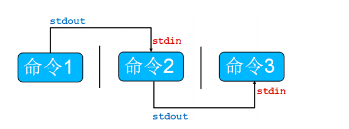
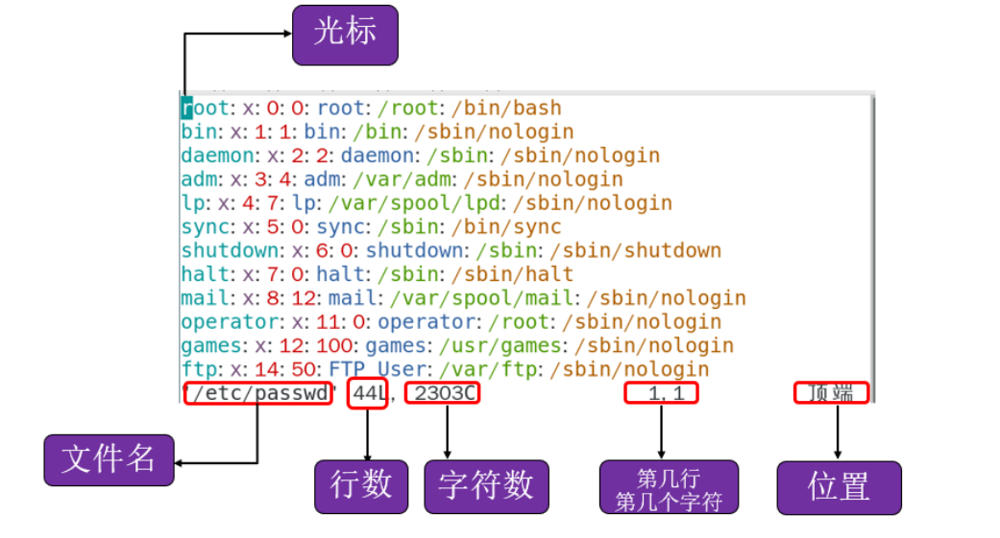
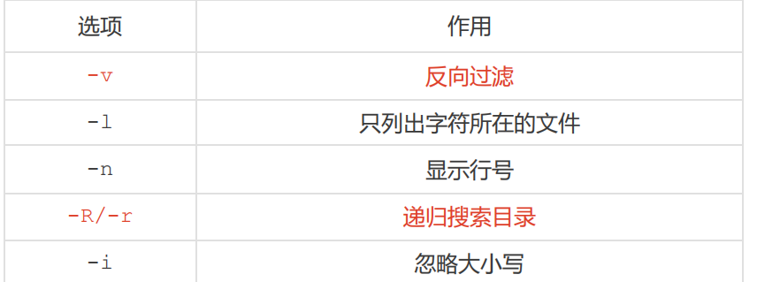
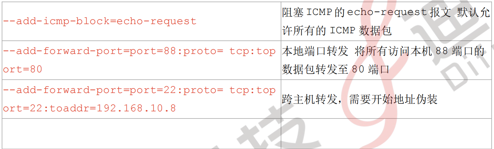
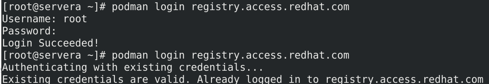
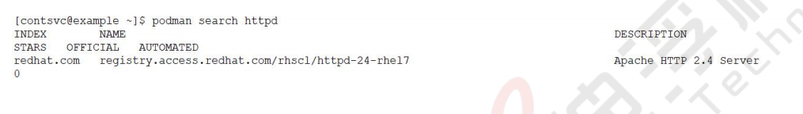

文件目录 
Tab补全篇
shell Tab补全依赖包bash-completion-2.11-4.el9.noarch(最小安装没有)
| Bash |
|---|
| [root@localhost ~]# rpm -qa | grep bash
bash-5.1.8-4.el9.x86_64
bash-completion-2.11-4.el9.noarch
|
转义字符"\"
分行(提高可读性)
| Bash |
|---|
| mkdir test \
test2 \
test3
|
创建一个有空格的文件夹
cd命令
| Bash |
|---|
| [root@RHEL9 /]# cd var （改变目录位置至当前目录下的var子目录下）
[root@RHEL9 var]# cd .. （改变当前位置至当前目录的父目录）
[root@RHEL9 var]# cd . （切换到当前目前）
[root@RHEL9 /]# cd （改变目录位置至用户登录时的工作目录）
[root@RHEL9 ~]# cd ~ （改变目录位置至用户登录时的工作目录（用户的家目录）
[root@RHEL9 ~]# cd ../etc （改变目录位置至当前目录的父目录下的etc的子目录下）
[root@RHEL9 etc]# cd /var/www （利用绝对路径表示改变目录到 /var/www目录下）
[root@RHEL9 etc]# cd - （返回上一次切换前的目录，相当于撤销）
|
ls命令
ls命令用来列出文件或目录信息。
用法：ls [参数] 目录名或文件名
---列出文件或目录信息---
| Bash |
|---|
| [root@RHEL9 /]# ls
afs boot etc lib media opt root sbin sys usr
bin dev home lib64 mnt proc run srv tmp var
|
---显示所有文件--- -a：显示所有内容，包括以“.”开头的隐藏文件。
| Bash |
|---|
| [root@RHEL9 /]# ls -a
. afs boot etc lib media opt root sbin sys usr
.. bin dev home lib64 mnt proc run srv tmp var
|
---显示目录下所有的子目录及文件--- -A：显示所有的内容，包括以“.”开头的隐藏文件。但不显
示“.”和“..”。
| Bash |
|---|
| [root@RHEL9 /]# ls -A
.123 bin dev home lib64 mnt proc run srv tmp var
afs boot etc lib media opt root sbin sys usr
|
---以长格式形式显示文件---
-l：以长格式形式显示文件的详细信息。
| Bash |
|---|
| [root@RHEL9 time]# ll
total 0
-rw-r--r--. 1 root root 0 May 12 23:52 00
-rw-r--r--. 1 root root 0 May 12 23:51 01
-rw-r--r--. 1 root root 0 May 12 23:52 02
|

1.文件类型
- 普通文件
d 目录
l 链接文件
2.权限位，三位一组，共三组，分别是文件的属主、属组、others的权限
r：读权限 w：写权限 x：执行权限
左三位：owner的权限（属主）
中三位：group的权限（属组）
右三位：其他人的权限（others）3.文件硬链接次数
4.属主：属于的用户
5.属组：属于的组
6.文件或目录大小
7.最后一次被修改的时间
8.文件或目录名
--以K，M，G单位显示文件大小---
-h：以K，M，G单位显示文件大小
| Bash |
|---|
| [root@RHEL9 time]# ll -h
total 84K
-rw-r--r--. 1 root root 28K May 14 13:08 1.txt
-rw-r--r--. 1 root root 55K May 14 13:13 2.txt
|
---仅显示目录名称---
-d：如果目标是目录，则只显示其目录名称。
而不是显示其下的各个文件，与-l搭配使用可以得到详细的目录信息。
| Bash |
|---|
| [root@RHEL9 /]# ls -d /root
/root
|
---按文件的修改时间排序---
-c：按文件的修改时间排序。
| Bash |
|---|
| [root@RHEL9 time]# ls
00 01 02
[root@RHEL9 time]# ls -c
00 02 01
|
file命令
| Bash |
|---|
| echo "liyedong" > test.txt
mv test.txt test.png
file test.png
|
---查看文件类型---
file命令查看文件类型
| Bash |
|---|
| [root@RHEL9 time]# file 1.txt
1.txt: ASCII text, with very long lines
[root@RHEL9 time]# file difu
difu: directory
|
“ > ”指令 与“ >> ”指令
> ： 输出重定向（覆盖重定向）
>> ： 追加重定向（写入重定向）
cat命令
cat命令主要用于滚屏显示文件内容或是将多个文件合并成一个文件。
用法：cat [参数] 文件名
---cat命令滚屏显示文件内容---
cat命令的常用参数选项如下： -b：对输出内容中的非空行标注行号。
| Bash |
|---|
| [root@RHEL9 /]# cat -b cat.txt
|
1 -b：对输出内容中的非空行标注行号
2 -n__：对输出内容中的所有行标注行号。
-n：对输出内容中的所有行标注行号。
| Bash |
|---|
| [root@RHEL9 /]# cat -n cat.txt
1 -b：对输出内容中的非空行标注行号。
2
3
4 -n：对输出内容中的所有行标注行号。
|
通常使用cat命令查看文件内容，但是cat命令的输出内容不能分页显示。（要查看超过一屏的文 件内容，需要用到more或less等其他命令）
cat命令中没有指定参数，则cat会直接显示文件原本的内容
| Bash |
|---|
| [root@RHEL9 /]# cat /var/www/html/index.html
（查看/var/www/html目录下的index.html文件 内容）
|
Test
---cat命令将多个文件文件合并成一个文件---
利用cat命令还可以合并多个文件。
| Bash |
|---|
| [root@RHEL9/]# cat file1
123
[root@RHEL9 /]# cat file2
456
[root@RHEL9 /]# cat file3 （file3已经存在，且原文件内容为 789）
789
[root@RHEL9 /]# cat file2 file1 > file3 （此命令会覆盖file3原文件内容）
[root@RHEL9 /]# cat file3
456
123
cat file2 file1 > file3 命令会把file2和file1文件的内容合并为file3。
file2文件的内容在file1文件的内容前面（按顺序位置决定），且此命令会覆盖掉file3原文件
内容。
[root@RHEL9 /]# cat file1
123
[root@RHEL9 /]# cat file2
456
[root@RHEL9 /]# cat file3 （file3已经存在，且原文件内容为 789）
789
[root@RHEL9 /]# cat file2 file1 >> file3 （此命令会将file2和file3文件的内容附加到file3
的后面）
[root@RHEL9 /]# cat file3
789
456
123
cat file2 file1>>file3
命令会把file2和file1的文件内容附加到file3文件原有内容的后面
|
more命令
可以一页一页地分屏显示文件的内容。more命令通常用于分屏显示文件内容。
执行more命令后，进入more状态。
按“Enter”键可以向下移动一行。
按“Space”键可以向下移动一页。
按“Q”键可以退出more命令。
用法：more [参数] 文件名
---指定分页显示时每页的行数---
-num：num代表的是数字，用来指定分页显示时每页的行数。
| Bash |
|---|
| [root@RHEL9 /]# cat test （原文件内容）
1
2
3
4
5
6
[root@RHEL9 /]# more -2 test （以每页2行显示文件内容）
1
2
--More--(33%) （已经显示文件内容的占比，6行文件以2行每页显示，第一页占比33%）
|
---指定从文件的第num行开始显示---
+num：num代表的是数字，用来指定从指定文件的第num行开始显示。
| Bash |
|---|
| [root@RHEL9 /]# cat test （原文件内容）
1
2
3
4
[root@RHEL9 /]# more +3 test （从第三行开始显示文件内容）
3
4
|
less命令
less命令是more命令的改进版，比more命令的功能强大。
less命令可以向下、向上翻页，甚至可以前后左右移动。执行less命令后，进入了less状态。
按“Enter”键可以向下移动一行
按“Space”键可以向下移动一页
按“B”键可以向上移动一页，也可以用光标键向前、后、左、右移动。
按“Q”键可以退出less命令。
less命令支持在文本文件中快速查找
| Bash |
|---|
| [root@RHEL9 /]# less file1
1
2
3
4
/3 （直接按下 / 键盘，进入快速查找模式，类似于Windows系统的Ctrl+F。输入查找的关键
字，回车查找）
|
less命令的用法与more命令基本相同
head命令
head命令用于显示文件的开头部分，默认情况下只显示文件的前10行内容。
用法：head [参数] 文件名
---显示指定文件的前num行---
-n num：显示指定文件的前num行
| Bash |
|---|
| [root@RHEL9 /]# head file1 （head不加参数显示原文件前十行内容）
123
456
789
012
[root@RHEL9 /]# head -n 3 file1 （-n 3 只显示文件的前3行内容）
123
456
789
|
---显示指定文件的前num个字符---
-c num：显示指定文件的前num个字符
| Bash |
|---|
| [root@RHEL9 /]# head file2 （head不加参数显示文件前十行内容）
123456
[root@RHEL9 /]# head -c 5 file2 （-c 5 只显示文件的前5个字符内容）
12345
|
**tail命令 **
tail命令用于显示文件的末尾部分，默认情况下只显示文件的末尾10行内容。
用法：tail [参数] 文件名
---显示指定文件的末尾num行---
-n num：显示指定文件的末尾num行
| Bash |
|---|
| [root@RHEL9 /]# tail -n 2 file1
|
4
5
---持续刷新文件内容---
-f ：持续刷新文件内容。
| Bash |
|---|
| [root@RHEL9 /]# tail -f /var/log/cron
......
Jan 23 00:23:01 ansible CROND[4710]: (root) CMD (logger "EX200 in progress")
Jan 23 00:24:01 ansible CROND[4743]: (root) CMD (logger "EX200 in progress")
|
mkdir命令
mkdir命令用于创建一个目录。
用法：mkdir [参数] 目录名
---创建目录---
mkdir命令用于创建一个目录。
| Bash |
|---|
| [root@RHEL9 /]# ls -d dir1/
dir1/
|
---递归创建目录---
-p：创建目录时，若父目录不存在，则同 时创建该目录与该目录的父目录。
| Bash |
|---|
| [root@RHEL9 /]# mkdir -p /D1/D2/D3/D4
[root@RHEL9 /]# tree /D1
/D1
└── D2
└── D3
└── D4
|
rmdir命令
rmdir命令用于删除空目录
用法：rmdir [参数] 目录名
---删除空目录---
| Bash |
|---|
| [root@RHEL9 /]# rmdir D1
rmdir: failed to remove 'D1': Directory not empty
[root@RHEL9 /]# rmdir D1/D2/D3/D4/
[root@RHEL9 /]# tree D1/
D1/
└── D2
└── D3
|
---递归删除目录---
-p：删除目录时，一同删除目录，但是父目录中除了要删除的目录之外必须已经没有其他目录及文 件。
| Bash |
|---|
| [root@RHEL9 /]# tree D1
D1
└── D1.11 directory, 0 files
[root@RHEL9 /]# rmdir -p D1/D1.1/
[root@RHEL9 /]# ls -d D1
ls: cannot access 'D1': No such file or directory
|
cp命令
cp命令主要用于文件或者目录的复制。
用法：cp [选项] 源文件 目标文件

---递归复制目录---
-r：递归复制目录（将目录下所有内容一起复制）
| Bash |
|---|
| [root@RHEL9 ~]# cp /var/www /
cp: -r not specified; omitting directory '/var/www'
[root@RHEL9 ~]# cp -r /var/www /
[root@RHEL9 ~]# ls -d /www
/www
|
---保留源文件的相关属性---
-p：保留源文件的相关属性
| Bash |
|---|
| [root@RHEL9 ansible]# ll
total 0
-rw-rw-r--. 1 ansible ansible 0 Jan 31 12:30 file
[root@RHEL9 ansible]# cp file /
[root@RHEL9 ansible]# ll /file
-rw-r--r--. 1 root root 0 Jan 31 12:32 /file
[root@RHEL9 ansible]# cp -p file /
cp: overwrite '/file'? y
[root@RHEL9 ansible]# ll /file
-rw-rw-r--. 1 ansible ansible 0 Jan 31 12:30 /file
|
-a：等同于同时使用以上选项
mv命令
mv命令主要用于文件或者目录的移动或改名
用法：mv [参数] 源文件或目录 目标文件或目录
# mv 源文件 目标
---目标文件或目录存在，提示是否覆盖---
-i：如果目标文件或者目录存在，则提示是否覆盖目标文件或者目录
| Bash |
|---|
| [root@RHEL9 time]# mv 1.txt /
mv: overwrite '/1.txt'? y
[root@RHEL9 time]# mv -i 1.txt /
mv: overwrite '/1.txt'? y
|
---强制移动或者覆盖---
-f：无论目标文件或者目录是否存在，直接覆盖目标文件或者目录。
| Bash |
|---|
| [root@RHEL9 time]# mv -f 1.txt /
[root@RHEL9 time]
|
---同时移动多个目录---
-t：将多个目录mv到一个目录中
| Bash |
|---|
| [root@RHEL9 time]# mv D1 D2 D3 -t /
[root@RHEL9 time]# ls -d /D*
/D1 /D2 /D3
|
注意：参数 -t 后面必须要紧跟mv之后的目标目录
第二种写法：
| Bash |
|---|
| [root@RHEL9 time]# mv -t / D1 D2 D3
[root@RHEL9 time]# ls -d /D*
/D1 /D2 /D3
|
rm命令
rm命令主要用于删除文件或者目录
用法：rm [参数] 文件或目录名 rm -rf /

---递归删除---
-r：递归删除目录与目录中的所有文件
| Bash |
|---|
| [root@RHEL9 time]# rm -r A
rm: descend into directory 'A'? y
rm: descend into directory 'A/B'? y
rm: remove directory 'A/B/C'? y
rm: remove regular empty file 'A/B/fileC'? y
rm: remove directory 'A/B'? y
rm: remove regular empty file 'A/fileB'? y
rm: remove directory 'A'? y
[root@RHEL9 time]#
|
---强制删除---
-f：强制删除且不提示
| Bash |
|---|
| [root@RHEL9 time]# rm -f 2.txt
[root@RHEL9 time]#
|
touch命令
touch命令用于建立文件
用法：touch [参数] 文件或目录名
---创建文件---
| Bash |
|---|
| [root@RHEL9 time]# touch file
[root@RHEL9 time]# ll file
-rw-r--r--. 1 root root 0 Jan 31 17:18 file
|
---刷新时间---
-m：仅把文件或目录的存取时间改为当前时间
| Bash |
|---|
| [root@RHEL9 time]# ll
total 0
drwxr-xr-x. 2 root root 18 Jan 31 17:19 difu
[root@RHEL9 time]# touch -m difu/
[root@RHEL9 time]# ll
total 0
drwxr-xr-x. 2 root root 18 Jan 31 17:20 difu
|
find命令
find命令用于文件查找
用法：find [路径] [匹配表达式]

---查找指定文件---
-name 文件名：查找指定的文件名称
| Bash |
|---|
| [root@RHEL9 time]# ls
ABC difu file
[root@RHEL9 time]# find / -name ABC
/time/ABC
|
---查找属于指定用户文件---
-user 用户名：查找属于指定用户的文件
| Bash |
|---|
| [root@RHEL9 time]# ll
total 0
-rw-r--r--. 1 RHEL RHEL 0 Jan 31 17:22 ABC
drwxr-xr-x. 2 root root 18 Jan 31 17:22 difu
-rw-r--r--. 1 root root 0 Jan 31 17:22 file
[root@RHEL9 time]# find / -user RHEL
......
/time/ABC
......
|
---查找属于指定组文件---
-group 组名：查找属于指定组的文件
| Bash |
|---|
| [root@RHEL9 time]# ll
total 0
-rw-r--r--. 1 RHEL RHEL 0 Jan 31 17:22 ABC
drwxr-xr-x. 2 root root 18 Jan 31 17:22 difu
-rw-r--r--. 1 root root 0 Jan 31 17:22 file
[root@RHEL9 time]# find / -group RHEL
......
/time/ABC
......
|
---查找指定大小范围文件---
-size +n / -n：查找大于或者小于指定大小的文件
| Bash |
|---|
| [root@RHEL9 time]# find / -size +500M
......
/mnt/images/install.img
[root@RHEL9 time]# ll -h /mnt/images/install.img
-r--r--r--. 1 root root 583M Oct 9 2020 /mnt/images/install.img
[root@RHEL9 time]# find / -size -5
......
/1.txt
[root@RHEL9 time]# ll -h /1.txt
-rw-r--r--. 1 root root 0 Jan 11 17:38 /1.txt
|
通配符
文件通配在ls，cp，rm等文件管理命令会经常用到
使用通配符符来表示某一类文件
| 通配符号 |
含义 |
| * |
表示任意长度的任意字符 |
| ？ |
表示单个任意字符 |
| [ ] |
表示集合范围内的任意单个字符[0-9]表示任意单个数字，[a-z]表示任意单个小写字母 |
| [^] |
表示不在集合范围内的单个字符
[^a-z]表示除小写字母以外的其他字符 |
| { } |
展开{ }中的内容 |
例子
查找归simone所有的所有文件并将其副本放入/root/found目录
| Bash |
|---|
| '[commond]'===$[commond]
mkdir -p /root/found
cp -a `find / -user simone` /root/found
或者
cp -a $(find / -user simone) /root/found
|
tar文件归档打包工具
将多个文件或者目录打包成一个文件
用法：tar [选项] 归档后的文件 被归档的文件

---创建归档文件---
| Bash |
|---|
| [root@RHEL9 time]# tar -cf file.tar file1 file2 file3
[root@RHEL9 time]# ls
file1 file2 file3 file.tar tar
|
---提取归档文件---
| Bash |
|---|
| [root@RHEL9 time]# tar -xvf file.tar -C tar/
file1
file2
file3
[root@RHEL9 time]# tree tar/
tar/
├── file1
├── file2
└── file3
0 directories, 3 files
|
归档并压缩
tar 本身不具备压缩功能，可以通过调用其它压缩工具进行压缩
用法：tar [选项] 压缩文件 源文件
linux下常用的压缩工具：gzip bzip2
创建的归档名称可以自定义，可通过file命令查看归档类型。
---创建与提取gzip压缩格式---
-z(小写)：使用gzip压缩
| Bash |
|---|
| [root@RHEL9 time]# tar -czvf file.tar.gzip file1 file2 file3
file1
file2
file3
[root@RHEL9 time]# ls
file1 file2 file3 file.tar.gzip
-x：提取gzip压缩文件
[root@RHEL9 time]# ls
file.tar.gzip
[root@RHEL9 time]# tar -xzvf file.tar.gzip
file1
file2
file3
[root@RHEL9 time]# ls
file1 file2 file3 file.tar.gzip
|
---创建与提取bzip2压缩格式---
-j(小写)：使用bzip2压缩
| Bash |
|---|
| [root@RHEL9 time]# tar -cjvf file.tar.bzip2 file1 file2 file3
file1
file2
file3
[root@RHEL9 time]# ls
file1 file2 file3 file.tar.bzip2
|
-x：提取bzip2压缩文件
| Bash |
|---|
| [root@RHEL9 time]# ls
file.tar.bzip2
[root@RHEL9 time]# tar -xjvf file.tar.bzip2
file1
file2
file3
[root@RHEL9 time]# ls
file1 file2 file3 file.tar.bzip2
|
---创建与提取xz压缩格式---
-J（大写）：使用xz压缩
| Bash |
|---|
| [root@RHEL9 time]# tar -cJvf file.tar.xz file1 file2 file3
file1
file2
file3
[root@RHEL9 time]# ls
file1 file2 file3 file.tar.xz
|
-x：提取xz压缩文件
| Bash |
|---|
| [root@RHEL9 time]# ls
file.tar.xz
[root@RHEL9 time]# tar -xJvf file.tar.xz
file1
file2
file3
[root@RHEL9 time]# ls
file1 file2 file3 file.tar.xz
|
总结：
tar -czvf [创建归档并gzip压缩]
tar -xzvf [提取gzip压缩的归档文件]
tar -cjvf [创建归档并使用bzip2压缩]
tar -cJvf [创建归档并使用xz压缩]
gzip ==== z
bzip2 ==== j
xz ===== J
zip ====== zip
| Bash |
|---|
| [root@difu1909 ~]# tar -czvf /home/ahdifu/local.tar.gzip /home/myth/
|
[归档后的目标路径] [文件源路径]
其它一些常用的压缩文件工具
zip工具
---创建与提取zip压缩格式---
zip：使用zip压缩
| Bash |
|---|
| [root@RHEL9 time]# zip file.zip file1 file2 file3
adding: file1 (stored 0%)
adding: file2 (stored 0%)
adding: file3 (stored 0%)
[root@RHEL9 time]# ls
file1 file2 file3 file.zip
|
unzip：提取zip压缩文件
| Bash |
|---|
| [root@RHEL9 time]# ls
file.zip
[root@RHEL9 time]# unzip file.zip
Archive: file.zip
extracting: file1
extracting: file2
extracting: file3
[root@RHEL9 time]# ls
file1 file2 file3 file.zip
|
一些命令的组合使用：
| Bash |
|---|
| ls -ld ==== ll -d
echo ahdifu > 1.txt
echo ahdifu >> 1.txt
rm -rf /time/*.*
rm -rf /time/*
rm -rf /time/*.t??
a.txt bc.att cd..txt aaa.ttt
cp -a `find / -name *.txt` /time
find / -name *.txt -exec cp -a {} /time/ \;
-exec ：把查找到的内容交给exec后面的命令执行
|
配置主机名
| Bash |
|---|
| # hostnamectl set-hostname HOST_NAME
[root@ahdifu ~]# hostnamectl set-hostname Ahdifu
exit 或者使用 exec bash退出再次登录shell
[root@Ahdifu ~]#
|
正确的关机方法
重启主机：reboot
其它一些关机命令：halt、poweroff、shutdown
shutdown作用：关机，重启，定时关机
语法：shutdown [选项]
| Bash |
|---|
| # shutdown -h +10 10分钟之后关机
# shutdown -h 23:30 指定具体的时间点进行关机
# shutdown -h now 立即关机
# shutdown -r now 立即重启
# shutdown -r +10 10 分钟以后重启
# shutdown -r 22:22 22:22 以后重启
init：服务等级，Linux中一共有7个等级，目前先了解常用的4个等级
init 0 关机
init 3 纯命令行模式
init 5 含有图形界面的模式
init 6 重启
|
用户管理
管理用户
useradd ， userdel ， usermod , passwd , id ,w,who, chage
添加用户：useradd
1.useradd [选项] username
常见选项：
-u 指定 UID
-g 指定基本组（组 ID/组名）
-G 指定附加组 （组 ID/组名）
-c 添加描述
-d 指定用户家目录
-s 指定默认登录 shell
-e 指定账户过期日期,格式 YY-MM-DD
-M 不创建家目录
-r 添加为系统用户（不可以为纯数字）
用户家目录文件是由/etc/skel 目录中复制而来
新建用户默认属性变量文件：/etc/login.defs
| Bash |
|---|
| [root@df_rhel ~]# useradd yukang
[root@df_rhel ~]# cat /etc/passwd
yukang:x:1001:1001::/home/yukang:/bin/bash
[root@df_rhel ~]# id yukang
uid=1001(yukang) gid=1001(yukang) groups=1001(yukang)
创建一个用户名为 ansible 且 uid 为 2000：
[root@df_rhel ~]# useradd -u 2000 ansible
[root@df_rhel ~]# id ansible
uid=2000(ansible) gid=2000(ansible) groups=2000(ansible)
创建用户时候，会同时创建相同名字的用户组，默认只有基本组
[root@df_rhel ~]# useradd -u 1500 test01 -g difushare
[root@df_rhel ~]# id test01
uid=1500(test01) gid=2001(difushare) groups=2001(difushare)
[root@df_rhel ~]# useradd user01 -G difushare
[root@df_rhel ~]# id user01
uid=2001(user01) gid=2002(user01) groups=2002(user01),2001(difushare)
[root@df_rhel ~]# useradd -u 3000 -s /sbin/nologin -M web
[root@df_rhel ~]# id web
uid=3000(web) gid=3000(web) groups=3000(web)
[root@df_rhel ~]# cd /home/
[root@df_rhel ~]# su - web
su: warning: cannot change directory to /home/web: No such file or directory
This account is currently not available.
[root@Myth_RHEL ~]# useradd -s /bin/false user4
|
删除用户: userdel
2.userdel
[选项]
username
-f 强制删除
-r 删除用户时同时删除用户家目录
| Bash |
|---|
| [root@df_rhel /]# cd /home/
[root@df_rhel home]# ls
ansible myth test01 test02 user01
[root@df_rhel home]# userdel test01
[root@df_rhel home]# ls
ansible myth test01 test02 user01
[root@df_rhel home]# cat /etc/passwd
myth:x:1000:1000:myth:/home/myth:/bin/bash
ansible:x:2000:2000::/home/ansible:/bin/bash
test02:x:1600:1600::/home/test02:/bin/bash
user01:x:2001:2002::/home/user01:/bin/bash
web:x:3000:3000::/home/web:/sbin/nologin
[root@df_rhel ~]# cd /var/spool/mail/
[root@df_rhel mail]# ls
ansible myth rpc test01 test02 user01 web
|
直接使用 userdel 不加参数删除用户，可以删除用户，但是不删除用
户的家目录和邮件目录
| Bash |
|---|
| [root@df_rhel home]# userdel user01
[root@df_rhel home]# useradd user01
useradd: warning: the home directory already exists.
Not copying any file from skel directory into it.
Creating mailbox file: File exists
[root@df_rhel home]# userdel -rf user01
[root@df_rhel home]# ls
ansible myth test02
|
管理组
groupadd: 添加组
-g 指定 GID
[root@df_rhel ~]# groupadd -g 2019 difutech
[root@df_rhel ~]# cat /etc/group [查看创建的组及组 ID]
groupdel : 删除组
查看账户属性信息: id
3.id username
-u 显示 UID
-g 显示基本组 GID
-G 显示附加组 GID
-n 和 u,g,G 一起使用，显示具体名称，不显示 id,
| Bash |
|---|
| [root@df_rhel ~]# id myth
uid=1000(myth) gid=1000(myth) groups=1000(myth)
[root@df_rhel ~]# id -nu myth
myth
[root@df_rhel ~]# id -ng myth
myth
[root@df_rhel ~]# id -nG myth
myth
|
查看用户信息： w/who
w:查看当前登录系统的所有系统信息
who:查看当前登录用户
修改账号属性：usermod
5.usermod [选项] username
-u 修改 uid
-g 修改基本组
-G 修改附加组
--会覆盖原有的附加组
-a -G 添加附加组 --不会覆盖
-s 修改登录 shell
-u 修改 uid
| Bash |
|---|
| [root@df_rhel ~]# id myth
uid=1000(myth) gid=1000(myth) groups=1000(myth)
[root@df_rhel ~]# usermod -u 1111 myth
[root@df_rhel ~]# id myth
uid=1111(myth) gid=1000(myth) groups=1000(myth)
|
-g 修改基本组
| Bash |
|---|
| [root@df_rhel ~]# usermod -g difushare myth
[root@df_rhel ~]# id myth
uid=1111(myth) gid=2001(difushare) groups=2001(difushare),1000(myth)
[root@df_rhel ~]#
|
-G 修改附加组
| Bash |
|---|
| [root@df_rhel ~]# id myth
uid=1111(myth) gid=1000(myth) groups=1000(myth),2001(difushare)
[root@df_rhel ~]# usermod -G difustudent myth
[root@df_rhel ~]# id myth
uid=1111(myth) gid=1000(myth) groups=1000(myth),3001(difustudent)
|
思考题：
| Bash |
|---|
| [root@df_rhel ~]# usermod -G myth myth
[root@df_rhel ~]# id myth
uid=1111(myth) gid=2001(difushare) groups=
|
-s 修改登录 shell
| Bash |
|---|
| [root@df_rhel ~]# usermod -s /sbin/nologin ansible
[root@df_rhel ~]# su - ansible
This account is currently not available.
|
修改用户密码 ： passwd
6.passwd username :
--stdin 从标准输入读取密码
| Bash |
|---|
| #echo “password” | passwd --stdin username --使用标准输入更改密码 不适合debian和ubuntu
echo "root:password" | chpasswd #适合大部分发行版
|
切换用户 : su
7.su 切换用户
---“su ”与 “su - ” 的区别
su username：不会切换用户环境
su - username：切换用户环境，相当于用户正常登陆
| Bash |
|---|
| [root@df_rhel ~]# su myth
[myth@df_rhel root]$ exit
exit
[root@df_rhel ~]# su - myth
Last login: Sat May 11 09:53:01 EDT 2019 on pts/1
[myth@df_rhel ~]$
|
---管理员与非管理员之间的切换
| Bash |
|---|
| [root@df_rhel ~]# su - myth
Last login: Sat May 11 09:50:32 EDT 2019 on pts/1
[myth@df_rhel ~]$ su - difu
Password:
Last login: Sat May 11 09:50:48 EDT 2019 on pts/1
[difu@df_rhel ~]$ su - root
Password:
Last login: Sat May 11 09:11:31 EDT 2019 from 192.168.200.222 on pts/1
[root@df_rhel ~]#
|
从 root 用户切换到其他用户是不需要密码验证，从普通用户切换到任何用户都
需要密码验证
文件权限管理
权限管理
普通权限：read ，write ，execute

查看文件权限属性：
| Bash |
|---|
| [myth@df_rhel ~]$ ls -l file.txt
-rw-rw-r--. 1 myth myth 0 May 11 10:00 file.txt
或
[myth@df_rhel ~]$ ll file.txt
-rw-rw-r--. 1 myth myth 0 May 11 10:00 file.txt
|
查看目录的权限属性：
| Bash |
|---|
| [myth@df_rhel ~]$ ll -d dir
drwxrwxr-x. 2 myth myth 6 May 11 10:01 dir
111 111 000
|
文件权限应用：
| Bash |
|---|
| [difu@df_rhel tmp]$ ll file.txt
-rw-rw-r--. 1 myth myth 4 May 11 10:06 file.txt
[difu@df_rhel tmp]$ cat file.txt
123
[difu@df_rhel tmp]$ echo 456 > file.txt
-bash: file.txt: Permission denied
|
file.txt 该文件的属主和属组都是 myth，因此 difu 这个用户对该文
件的身份就属于 others，只有读（r）的权限，因此不能写入数据
目录权限应用：
| Bash |
|---|
| [myth@df_rhel home]$ ll
total 0
drwx------. 3 ansible ansible 78 May 11 08:03 ansible
drwx------. 5 difu difu 128 May 11 09:50 difu
drwx------. 6 myth myth 139 May 11 10:05 myth
drwx------. 3 test02 test02 78 May 11 08:12 test02
[myth@df_rhel home]$ cd difu
-bash: cd: difu: Permission denied
[myth@df_rhel home]$ cd myth
[myth@df_rhel ~]$ pwd
/home/myth
|
权限修改：
chown : 修改文件或目录属主/属组
#chown username filename --修改属主
| Bash |
|---|
| [root@df_rhel tmp]# ll file.txt
-rw-rw-r--. 1 myth myth 4 May 11 10:06 file.txt
[root@df_rhel tmp]# chown difu file.txt
[root@df_rhel tmp]# ll file.txt
-rw-rw-r--. 1 difu myth 4 May 11 10:06 file.txt
[root@df_rhel tmp]# su - difu
[difu@df_rhel tmp]$ echo 456 > file.txt
[difu@df_rhel tmp]$ cat file.txt
456
[difu@df_rhel tmp]$ su - myth
Password:
Last login: Sat May 11 10:10:38 EDT 2019 on pts/1
[myth@df_rhel tmp]$ ll
total 4
-rw-rw-r--. 1 difu myth 4 May 11 10:18 file.txt
[myth@df_rhel tmp]$ echo 123 >> file.txt
[myth@df_rhel tmp]$ cat file.txt
456
123
|
#chown :grpname filename --修改属组
| Bash |
|---|
| [root@df_rhel tmp]# chown :difu file.txt
[root@df_rhel tmp]# ll file.txt
-rw-rw-r--. 1 difu difu 8 May 11 10:20 file.txt
|
#chown username:grpname filename --修改属主和属组
| Bash |
|---|
| [root@df_rhel tmp]# chown myth:myth file.txt
[root@df_rhel tmp]# ll file.txt
-rw-rw-r--. 1 myth myth 8 May 11 10:20 file.txt
|
-R 递归修改
| Bash |
|---|
| [root@df_rhel tmp]# ll dirall/
total 0
drwxrwxr-x. 2 difu difu 6 May 11 10:26 dir01
drwxrwxr-x. 2 difu difu 6 May 11 10:26 dir02
drwxrwxr-x. 2 difu difu 6 May 11 10:26 dir03
[root@df_rhel tmp]# ll -d dirall/
drwxrwxr-x. 5 difu difu 45 May 11 10:26 dirall/
[root@df_rhel tmp]# chown -R myth:myth dirall
[root@df_rhel tmp]# ll dirall/
total 0
drwxrwxr-x. 2 myth myth 6 May 11 10:26 dir01
drwxrwxr-x. 2 myth myth 6 May 11 10:26 dir02
drwxrwxr-x. 2 myth myth 6 May 11 10:26 dir03
[root@df_rhel tmp]# ll -d dirall/
drwxrwxr-x. 5 myth myth 45 May 11 10:26 dirall/
|
chgrp : 修改文件或目录属组
#chgrp grpname filename
-R 递归修改
| Bash |
|---|
| [root@df_rhel tmp]# ll
total 4
drwxrwxr-x. 5 myth myth 45 May 11 10:26 dirall
-rw-rw-r--. 1 myth myth 8 May 11 10:20 file.txt
[root@df_rhel tmp]# chgrp difu ./*
[root@df_rhel tmp]# ll
total 4
drwxrwxr-x. 5 myth difu 45 May 11 10:26 dirall
-rw-rw-r--. 1 myth difu 8 May 11 10:20 file.txt
|
chmod : 修改文件/目录权限
选项： -R 递归修改
#chmod u+r 文件 为属主增加读的权限
#chmod o=rx 文件 将其他人的权限设置为读和执行
#chmod a=r 文件 将属主的权限设置为只读
#chmod g-x 文件 减去属组执行的权限
•权限位是由 rwx 组成，没有权限可以不写或用“-”填充
chmod u
| Bash |
|---|
| [root@df_rhel tmp]# chmod u+x file.txt
[root@df_rhel tmp]# ll file.txt
-rwxrw-r--. 1 myth difu 8 May 11 10:20 file.txt
[root@df_rhel tmp]# chmod u-w file.txt
[root@df_rhel tmp]# ll file.txt
-r-xrw-r--. 1 myth difu 8 May 11 10:20 file.txt
|
chmod o
| Bash |
|---|
| [root@df_rhel tmp]# chmod o=rwx file.txt
[root@df_rhel tmp]# ll file.txt
-r-xrw-rwx. 1 myth difu 8 May 11 10:20 file.txt
|
chmod g
| Bash |
|---|
| [root@df_rhel tmp]# chmod -R g=--- dirall/
[root@df_rhel tmp]# ll dirall/
total 0
drwx---r-x. 2 myth myth 6 May 11 10:26 dir01
drwx---r-x. 2 myth myth 6 May 11 10:26 dir02
drwx---r-x. 2 myth myth 6 May 11 10:26 dir03
[root@df_rhel tmp]# ll -d dirall
drwx---r-x. 5 myth difu 45 May 11 10:26 dirall
|
分别修改三类用户的权限
三类用户：
u:属主
g:属组
o:其它用户
a:所有用户
使用‘+’ ‘-’ ‘=’ 设置各类用户的权限
#chmod u+x filename
#chmod o-w filename
#chmod a+x filename
#chmod o=r-x filename
没有权限直接接补为-
文件访问控制列表
setfacl : 文件系统访问控制列表，针对具体用户设定权限，而非
u,g,o 三类用户
-m 设定权限
-x 取消权限
#setfacl -m u:username:rw- filename --设定用户 acl
| Bash |
|---|
| [root@df_rhel public]# ll
total 0
-rw-rw-r--. 1 root root 0 May 11 10:50 file01.txt
-rw-r--r--. 1 root root 0 May 11 10:50 file02.txt
[root@df_rhel public]# setfacl -m u:myth:rw file01.txt
[root@df_rhel public]# ll
total 0
-rw-rw-r--+ 1 root root 0 May 11 10:50 file01.txt -rw-r--r--. 1 root root 0 May 11 10:50 file02.txt
[root@df_rhel public]# getfacl file01.txt
# file: file01.txt
# owner: root
# group: root
user::rw- user:myth:rw- group::rw- mask::rw- other::r--
[root@df_rhel public]# su - myth
Last login: Sat May 11 10:56:33 EDT 2019 on pts/1
[myth@df_rhel ~]$ cd /home/public/
[myth@df_rhel public]$ echo 123 >> file01.txt
[myth@df_rhel public]$ cat file01.txt
123
|
#setfacl -m g:grpname:r-x filename --设定组 acl
| Bash |
|---|
| [root@df_rhel public]# setfacl -m g:difu:rw file02.txt
[root@df_rhel public]# getfacl file02.txt
# file: file02.txt
# owner: root
# group: root
user::rw-
group::r--
group:difu:rw-
mask::rw-
other::r--
|
#setfacl -x username filename -- 取消用户 acl
| Bash |
|---|
| [root@df_rhel public]# setfacl -x myth file01.txt
[root@df_rhel public]# getfacl file01.txt
# file: file01.txt
# owner: root
# group: root
user::rw-
group::rw-
mask::rw-
other::r--
[root@myth myth]# setfacl -x g:difu 2.txt --取消属组的特殊权限
|
#getfacl filename
--获取文件的 acl
特殊权限
| Bash |
|---|
| rwsrwsrwt
rwSrwSrwT
s对于属主:代表特殊权限，表示以root用户执行 数值表示为 4
s对于属组：该目录下创建文件的属组将自动和目录属组一致
t:在 others 设置，在公共目录（用户都具有写权限的目录）中，用户
只能删除自己拥有的文件。
大写表示没有x执行权限
|
:::color2
SUID 权限：
在 user 位设置，以文件的属主身份而非当前操作者的身份操作文件。
对目录无影响。
数值表示为 4
表现为 s 或 S，s 表示含有 x 权限，S 则表示没有 x 权限
如 passwd 命令就含有 s 权限，当普通用户执行 passwd 修改密码
时会获得 root 权限，以 root 身份将密码写入 shadow 文件中
SGID 权限：
在 group 位设置，以文件属组的身份操作文件。对于目录，用户在
该目录下创建文件的属组将自动和目录属组一致。
数值表示为 2
Sticky 权限：
在 others 设置，在公共目录（用户都具有写权限的目录）中，用户
只能删除自己拥有的文件。
:::
数值表示为 1
| Bash |
|---|
| chmod u+s filename
chmod g+s filename
chmod o+t filename
chmod 4755 filename # -> rwsrwxrwt
chmod 2755 filename # -> rwxrwsrwx
chmod 1755 filename # -> rwxrwxrwt
chmod 7755 filename # -> rwsrwsrwt
|
练习

| Bash |
|---|
| mkdir -p /home/contrib
groupadd manager
chown :manager /home/contrib
chmod 2770 /home/contrib
|
MODE:八进制权限模型
| Bash |
|---|
| --- --- ---
rwx r-x r-x
111 101 101 = 755
--- 0
--x 1
-w- 2
-wx 3
r-- 4
r-x 5
rw- 6
rwx 7
|
默认权限 umask
| Bash |
|---|
| umask
0022
0666-0022 -->644 rw-r--r--
0777-0022 -->755 rwxr-xr-x
|
:::color2
文件默认权限=666-umask
文件默认没有执行权限，若通过掩码计算的默认权限中有执行权限，默认权限将自动加 1
目录默认权限=777-umask
root 用户默认 umask 值位 0022
普通用户默认 umask 值位 0002 (用户的基本组名必须和用户名相 同)
:::
umask 设定
:::color2
在 bash 全局配置文件/etc/profile 设定 ，对所有用户生效
在~/.bash_profile 中设定，对当前用户生效
:::
| Bash |
|---|
| vim /etc/profile
vim ~/.bash_profile
直接在空语句加入
umask 0002
source /etc/profile
source ~/bash_profile
mkdir test
touch test.txt
ls -l
|
练习

| Bash |
|---|
| 0666 - 0020 = 0646
vim ~/.bash_profile
umask 0646
source ~/bash_profile
|

| Bash |
|---|
| su - daffy
vim /home/daffy/.bash_profile
umask 0027
source /home/daffy/.bash_profile
mkdir test
touch test.txt
ls -l
|
history命令
命令历史：
命令历史：系统默认会记录最近所输入的命令
history命令可以查看命令历史
使用方法：
# history [选项]
常用选项：
-c 清空缓冲区命令历史
-w 把缓冲区的命令写入到文件中
-d 10 删除命令历史中的第10条记录
其他
命令历史文件： ~/.bash_history
调用历史命令
| Bash |
|---|
| [root@difu ~]# ls -l /etc/passwd
-rw-r--r--. 1 root root 2303 2月 22 09:27 /etc/passwd
[root@difu ~]# !!
ls -l /etc/passwd
-rw-r--r--. 1 root root 2303 2月 22 09:27 /etc/passwd
[root@difu ~]# systemctl restart sshd
[root@difu ~]# !sys
systemctl restart sshd！！
|
命令别名和命令替换：
命令替换：把命令的执行结果传递给前面的命令
命令替换方式：
使用
#命令1 </font><font style="color:rgb(0,0,0);">命令</font><font style="color:rgb(0,0,0);">2
| Bash |
|---|
| [root@df_rhel ~]# ls -l `which ps`
-rwxr-xr-x. 1 root root 100120 Sep 22 2017 /usr/bin/ps
|
2. 使用$()
#命令1 $(命令2)
| Bash |
|---|
| [root@df_rhel ~]# touch $(date +%Y%m%d)
[root@df_rhel ~]# ls
20190515
|
把``或$()中的内容当作命令执行，然后引用执行的结果
命令别名：把一条命令定义为一个命令，当运行这个别名就相当于运行整条命令

| Bash |
|---|
| [root@df_rhel ~]# vim /etc/sysconfig/network-scripts/ifcfg-ens33
[root@df_rhel ~]# alias veth='vim /etc/sysconfig/network-scripts/ifcfgens33'
[root@df_rhel ~]# veth
|
管道和重定向：
I/O重定向
| Bash |
|---|
| [root@difu tmp]# echo Hello
Hello
[root@difu tmp]# echo Hello > file1
[root@difu tmp]# cat file1
Hello
[root@difu tmp]# ls
centos difu file1 redhat
[root@difu tmp]# ls >> file1 [追加重定向]
[root@difu tmp]# cat file1
Hello
centos
difu
file1
redhat
[root@difu tmp]#
|
管道：
将前一条命令的标准输出作为后一条命令的标准输入
管道的操作符是“|”
注意：1.管道命令只处理前一个命令正确输出，不处理错误输出
2.管道右边命令，必须能够接收标准输入流命令才行

| Bash |
|---|
| [root@df_rhel ~]# echo ahdifu.com | passwd --stdin myth
[root@df_rhel ~]# ls /etc/ | more
[root@df_rhel ~]# ls /etc/ | wc -l
|
文本文件：ascii格式的文件，Linux下很多文件都是文本文件
使用VIM编辑文本：
vi：Visual Interface 可视化文本编辑器
vim：vi的增强版
vim语法格式
#vim [选项] 文件
如果文件不存在，vim将新建一个文件
vim模式：
命令模式：此状态下敲击键盘动作会被vim识别为命令，而非输入字符
输入模式：常规的文本编辑
末行模式：也叫底线模式，此模式下可以输入单个或多个字符命令 VIM 打开文件：
VIM 打开文件：
#vim file
#vim +10 file: 打开文件并使光标处于第10行
#vim + file: 打开文件并使光标处于最后一行
#vim +/abc file: 打开文件并使光标处于第一次匹配到abc的行vim保存关闭文件
vim从命令模式进入编辑模式
光标移动在末行模式下，光标行间跳转
输入“:行号” → 回车 删除字符或行复制和粘贴 复制和粘贴撤销和恢复撤销
删除字符或行复制和粘贴 复制和粘贴撤销和恢复撤销 字符替换
字符替换
字符查找
 末行模式下字符查找和替换
末行模式下字符查找和替换
:起始行，结束行s/pattern/string/gi
不指定起始和结束行则默认是只搜索替换光标所在行
s 表示查找
/ 是分割符，也可以用其他符号，前后保持一致即可
pattern 是要搜索的字符，支持正则
string 是替换的字符
g 表示全局,默认是只替换一行里面第一次被匹配到的字符
i 表示忽略大小写
例如：
用vim把/etc/passwd中的/bin/nologin替换成/bin/bash
:%s#/sbin/nologin#/bin/bash#gi
% 表示全文
末行模式下配置其他特性
 vim参数配置
vim参数配置
vim的配置位于/etc/vimrc，用于配置vim相关功能
字符过滤
grep:对文本内容进行关键词搜索匹配
语法格式
#grep [选项] ‘搜索的字符’文件
| Bash |
|---|
| [root@df_rhel ~]# grep myth /etc/passwd
myth:x:1111:100
|
grep常用选项
正则表达式
正则表达式是一种模式匹配语言，用一些简单的符号来描述一个复杂的规则。
正则表达式常用符号例如：
1.把/etc/ssh/sshd_config文件中有效配置(去除空行和以#开头的行)
| Bash |
|---|
| [root@ahdifu ~]#grep -v ^# /etc/ssh/sshd_config | grep -v ^$
HostKey /etc/ssh/ssh_host_rsa_key
HostKey /etc/ssh/ssh_host_ecdsa_key
HostKey /etc/ssh/ssh_host_ed25519_key
SyslogFacility AUTHPRIV
……
|
2.过滤出/proc/meminfo中以“S”开头的行
| Bash |
|---|
| [root@ahdifu ~]# grep ^S /proc/meminfo
SwapCached: 0 kB
SwapTotal: 2097148 kB
SwapFree: 2097148 kB
Shmem: 10556 kB
Slab: 105428 kB
SReclaimable: 48412 kB
SUnreclaim: 57016 kB
|
文本统计
wc 统计文件的行数，词数和字符数
语法格式
#wc [选项] 文件
默认统计行数、词数和字符数
选项：
-l 只统计行数
-w 只统计词数
-c 只统计字符数
-L 统计最长行的字符数
| Bash |
|---|
| [root@df_rhel ~]# wc /etc/passwd
46 87 2366 /etc/passwd
|
行数 词数 字符数
统计/etc目录下的文件和目录数量
| Bash |
|---|
| [root@df_rhel ~]# ls /etc/ | wc -l
274
|
网络管理
网卡配置文件
网卡和配置文件一起形成网络功能，同一个网卡可以有多个配置，但只能有一个处于活动
状态。
网卡配置文件存放的位置：
Red Hat Enterprise Linux 8 版本
| Bash |
|---|
| [root@myth ~]# cd /etc/sysconfig/network-scripts/
|
Red Hat Enterprise Linux 9 版本
| Bash |
|---|
| [root@myth ~]# cd /etc/NetworkManager/system-connections/
|
⾃红帽企业 Linux 9 起，⽹络配置存储在 /etc/NetworkManager/system-connections/ ⽬录中。
此新配置位置使⽤密钥⽂件格式，⽽不是 ifcfg 格式。
不过，以前存储在 /etc/ sysconfig/network-scripts/ 的配置将继续有效。
/etc/NetworkManager/system-connections/ ⽬录存储通过
命令进⾏的任 何更改。
网卡管理
网卡接口：
ifconfig 显示当前活动的网卡 windows下的 ipconfig
-a 显示所有状态的网卡
命名规则：
eno16777736
ens160
以太网(ethernet): en
WLAN接口: wl
板载: o
热插拔: s
PCI插槽上的: p
配置文件管理
修改网络配置文件的方法：
1.图形界面修改

2.直接编辑网卡配置文件
/etc/NetworkManager/system-connections/ 此目录下都是跟网络功能相关的配置的文
件
#vim /etc/NetworkManager/system-connections/test.nmconnection --编辑网卡的配
置文件

直接编辑网卡配置文件需要 使⽤ nmcli 命令来激活新⽹络地址
| Bash |
|---|
| nmcli con reload #需要先加载配置文件，不然更新不会生效
nmcli con up <profile-name> #更新配置文件后，重新连接eth0的配置文件
|
3.使用 nmcli 配置网络:
| Bash |
|---|
| network manager command-line interface
|
网络管理器(NetworManager)是检测网络、自动连接网络的程序
启动：systemctl start NetworkManger
关闭：systemctl stop NetworkManager
开机启动：systemctl enable NetworkManger
查看是否开机启动：systemctl is-enabled NetworkManager
禁用开机启动：systemctl disable NetworkManager
连接配置名称：con-name （eth0）
硬件设备名称：if-name （ens33）
查看所有网卡的连接：
| Bash |
|---|
| #nmcli connection show
#nmcli device status
[root@myth ~]# nmcli device status (查看网卡硬件设备信息)
[root@myth ~]# nmcli connection show --active
NAME UUID TYPE DEVICE
ens33 96bd750e-9395-4d8d-bd48-449cab8a17d1 802-3-ethernet ens33
virbr0 c4fda5cb-64bd-40d4-a12d-6707425d893c bridge virbr0
[root@myth ~]# nmcli connection show ens33
|
显示所有设备状态信息：
| Bash |
|---|
| #nmcli device status
[root@myth ~]# nmcli device status （查看网卡链接状态）
DEVICE TYPE STATE CONNECTION
virbr0 bridge connected virbr0
ens33 ethernet connected ens33
lo loopback unmanaged --
virbr0-nic tun unmanaged -
|
创建网络连接
创建一个文件名为eth01，并且与物理网卡名为ens38绑定
| Bash |
|---|
| # nmcli connection add type ethernet con-name eth01 ifname ens38
|
再次创建一个文件名为eth0，同样与物理网卡名为ens38绑定，并且设置ip地址及网关
| Bash |
|---|
| #nmcli connection add type ethernet con-name eth1 ifname ens38 ipv4.addresses
192.168.200.248/24 ipv4.gateway 192.168.200.254 ipv4.dns 202.102.192.68
autoconnect yes ipv4.method manual
[root@myth network-scripts]# nmcli connection show
NAME UUID TYPE DEVICE
ens33 96bd750e-9395-4d8d-bd48-449cab8a17d1 802-3-ethernet ens33
eth0 d789dfee-4d28-4055-9de9-a4e4c5ebc779 802-3-ethernet ens38
virbr0 c4fda5cb-64bd-40d4-a12d-6707425d893c bridge virbr0
eth01 11fd8563-4e6b-4697-b97d-95657b0cc207 802-3-ethernet --
|
查看接口地址
| Bash |
|---|
| [root@myth network-scripts]# ip addr
5: ens38: <BROADCAST,MULTICAST,UP,LOWER_UP> mtu 1500 qdisc pfifo_fast state UP qlen
1000
link/ether 00:0c:29:74:87:8e brd ff:ff:ff:ff:ff:ff
inet 192.168.200.124/24 brd 192.168.200.255 scope global ens38
valid_lft forever preferred_lft forever
inet6 fe80::56a7:ee0f:5828:b48b/64 scope link
valid_lft forever preferred_lft forever
[root@myth network-scripts]# nmcli connection show eth0
IP4.ADDRESS[1]: 192.168.200.124/24
IP4.GATEWAY: 192.168.200.254
IP6.ADDRESS[1]: fe80::56a7:ee0f:5828:b48b/64N
IP6.GATEWAY:
|
修改某个连接的配置
| Bash |
|---|
| # nmcli connection modify eth0 ipv4.addresses 192.168.200.125/24 ipv4.dns 8.8.8.8
ipv4.gateway 192.168.200.254 ipv4.method manual
[root@myth network-scripts]# nmcli connection show eth0
IP4.ADDRESS[1]: 192.168.200.125/24
IP4.GATEWAY: 192.168.200.254
IP4.DNS[1]: 8.8.8.8
IP6.ADDRESS[1]: fe80::56a7:ee0f:5828:b48b/64
IP6.GATEWAY:
|
增加某个值
| Bash |
|---|
| # nmcli connection modify eth0 +ipv4.dns 4.4.4.4
[root@myth network-scripts]# systemctl restart network
[root@myth network-scripts]# nmcli connection show eth0 | grep IP4
IP4.ADDRESS[1]: 192.168.200.125/24
IP4.GATEWAY: 192.168.200.254
IP4.DNS[1]: 8.8.8.8
IP4.DNS[2]: 4.4.4.4
IP6.ADDRESS[1]: fe80::56a7:ee0f:5828:b48b/64
IP6.GATEWAY:
|
【注：激活接口地址的几种方式】
重新链接eth0网卡
| Bash |
|---|
| # nmcli connection reload
# nmcli connection up eth0
|
删除某个连接
| Bash |
|---|
| #nmcli connection delete eth0
[root@myth network-scripts]# nmcli connection delete eth01
Connection 'eth01' (11fd8563-4e6b-4697-b97d-95657b0cc207) successfully deleted.
|
断开某个连接
| Bash |
|---|
| #nmcli connection down eth0
[root@myth network-scripts]# nmcli connection show
NAME UUID TYPE DEVICE
ens33 96bd750e-9395-4d8d-bd48-449cab8a17d1 802-3-ethernet ens33
eth0 d789dfee-4d28-4055-9de9-a4e4c5ebc779 802-3-ethernet ens38
virbr0 c4fda5cb-64bd-40d4-a12d-6707425d893c bridge virbr0
[root@myth network-scripts]# nmcli connection down eth0
Connection 'eth0' successfully deactivated (D-Bus active path:
/org/freedesktop/NetworkManager/ActiveConnection/23)
[root@myth network-scripts]# nmcli connection show
NAME UUID TYPE DEVICE
ens33 96bd750e-9395-4d8d-bd48-449cab8a17d1 802-3-ethernet ens33
virbr0 c4fda5cb-64bd-40d4-a12d-6707425d893c bridge virbr0
eth0 d789dfee-4d28-4055-9de9-a4e4c5ebc779 802-3-ethernet --
|
激活某个连接
| Bash |
|---|
| #nmcli connection up eth0
[root@myth network-scripts]# nmcli connection up eth0
Connection successfully activated (D-Bus active path:
/org/freedesktop/NetworkManager/ActiveConnection/24)
[root@myth network-scripts]# nmcli connection show
NAME UUID TYPE DEVICE
ens33 96bd750e-9395-4d8d-bd48-449cab8a17d1 802-3-ethernet ens33
eth0 d789dfee-4d28-4055-9de9-a4e4c5ebc779 802-3-ethernet ens38
virbr0 c4fda5cb-64bd-40d4-a12d-6707425d893c bridge virbr0
|
网卡配置文件的断开与连接
断开： nmcli connection down ens161
连接：nmcli connection up ens161
网卡设备的断开与连接
断开：nmcli device disconnect ens160
连接：nmcli device connect ens160
断开设备连接
| Bash |
|---|
| # nmcli device disconnect ensxxx
[root@myth network-scripts]# nmcli device disconnect ens38
Device 'ens38' successfully disconnected.
打开设备连接
# nmcli device connect ensxxx
[root@myth network-scripts]# nmcli device connect ens38
Device 'ens38' successfully activated with 'd789dfee-4d28-4055-9de9-
a4e4c5ebc779'.
|
其他网络信息配置：
主机名修改
1.通过修改/etc/hostname 文件
修改后重启系统生效
查看当前主机名：
| Bash |
|---|
| [root@yukang ~]# cat /etc/hostname
yukang
|
可以通过vim编辑，编辑后，重启生效
2.使用hostnamectl修改
| Bash |
|---|
| hostnamectl hostname HOSTNAME
获取主机名 #hostname
|
配置本地名称解析
修改/etc/hosts 文件
格式：
ip 主机名 别名
DNS解析配置文件
文件 /etc/resolv.conf
网络端口侦听和网络连接信息查看：
1.netstat
-r 显示路由信息
-t 显示TCP连接
-u 显示UDP连接
-n 以数字方式显示端口和ip
-l 显示listen状态的连接
-p 显示监听套接字的进程名和PID
-a all
-tunalp
| Bash |
|---|
| netstat -tunalp | grep telnet
|
2.ss
选项同netstat
软件管理
什么是软件？
软件：Software是一系列按照特定顺序组织的计算机数据和指令的集合。一般来讲软件被划分为系统
软件、应用软件和介于这两者之间的中间件。
.exe
不同的系统平台指令不同，因此软件也不同，所以在不同类别的系统中，软件并不能通用，比如微软
系统中的exe安装包，一般无法在linux系统中安装
在Linux界有两大常见的软件安装方式：DPKG、RPM
dpkg最早由debian linux社区开发，B2D和ubuntu主要用这种安装方式
rpm最早是由red hat研发，Fedora、CentOS、SuSE等知名的开发商都是用该种方式
RPM介绍：
RedHat Package Manager 是以一种数据库记录的方式来将所需要的软件安装到 Linux 系
统的一套管理机制。
特性：
在通用平台上将软件编译好，打包成为 RPM 机制的包 [安装环境已定制化]。记录并检查软件安装的依
赖包，安装的时候就将该软件的信息整个写入 RPM 的数据库中，供后续查询、升级和卸载。
RPM软件包文件采用的软件名称组合
name-version-release.architecture的命名方式进行命名
httpd-2.4.6-88.el7.x86_64.rpm [软件名-版本号-编译次数.发行商版本.处理器平台]
name：描述其内容的一个或多个单词 （httpd）
version： 软件的原始版本号 （2.4.6）
release：在原始的发行版本号基础上，被新的软件开发商编译的次数及新的命名（88.el7）
arch：该软件可运行的处理机器架构 (x86_64);"noarch"表示不限定架构
（目前常见的几种处理器硬件架构：x86、arm、PowerPC）
RPM使用：
安装包下载：
本地软件包：
| Bash |
|---|
| [root@df_rhel ~]# mount /dev/sr0 /media/
[root@df_rhel ~]# cd /media/Packages/
[root@df_rhel Packages]# ls | wc -l
51
|
网络软件包：
http://rpm.pbone.net/
http://rpmfind.net
wget
ftp://ftp.pbone.net/mirror/archive.fedoraproject.org/fedora/linux/updates/27/armhfp/Packag
es/c/cowsay-3.04-8.fc27.noarch.rpm
软件安装：
#rpm -ivh package_name --可以同时安装多个软件，软件包可以下载到本地，也可以是
通过网络安装
-i:install
-v:显示指令的执行过程
-h:显示安装进度
--nodeps 忽略包依赖关系
--force 强制安装，实现降级或重装
--replacepkgs 替换原有安装
查询
#rpm -q PACKGE_NAME 查询包是否安装
-qa 查询所有已安装的包
| Bash |
|---|
| [root@df_rhel ~]# rpm -qa cowsay
cowsay-3.04-12.fc30.noarch
[root@df_rhel ~]# rpm -qa telnet
telnet-0.17-64.el7.x86_64
|
-qi 查询指定包的说明信息 （已安装的包）
| Bash |
|---|
| [root@df_rhel ~]# rpm -qi cowsay
Name : cowsay
Version : 3.04
Release : 12.fc30
Architecture: noarch
Install Date: Sat 18 May 2019 11:34:15 AM EDT
Group : Unspecified
Size : 78106
License : GPLv3+
Signature : RSA/SHA256, Thu 07 Feb 2019 12:39:22 AM EST, Key ID ef3c111fcfc659b9
Source RPM : cowsay-3.04-12.fc30.src.rpm
........
|
-ql 查询指定包安装后生成的文件列表
| Bash |
|---|
| [root@df_rhel ~]# rpm -ql telnet
/usr/bin/telnet
/usr/share/doc/telnet-0.17
/usr/share/doc/telnet-0.17/README
/usr/share/man/man1/telnet.1.gz
|
-qc 查询指定包安装后的配置文件
| Bash |
|---|
| [root@df_rhel ~]# rpm -qc httpd
|
-qd 查询指定包安装后的帮助文件
| Bash |
|---|
| [root@df_rhel ~]# rpm -qd cowsay
/usr/share/doc/cowsay/ChangeLog
/usr/share/doc/cowsay/LICENSE
/usr/share/doc/cowsay/README
/usr/share/man/man1/cowsay.1.gz
/usr/share/man/man1/cowthink.1.gz
|
-qf /path/file 查询指定的文件是由哪个包安装产生的
| Bash |
|---|
| [root@df_rhel ~]# rpm -qf /usr/share/doc/cowsay/ChangeLog
cowsay-3.04-12.fc30.noarch
|
-qpi 查询未安装包的信息
| Bash |
|---|
| [root@df_rhel ~]# rpm -qpi cowsay-3.04-12.fc30.noarch.rpm
|
-qpl 查询未安装包在安装后生成的文件列表
| Bash |
|---|
| [root@df_rhel ~]# rpm -qpl cowsay-3.04-12.fc30.noarch.rpm
|
RPM默认的文件安装路径：
/usr/bin 一些可执行文件
/usr/lib 一些程序使用的动态函数库
/usr/share/doc 一些基本的软件使用手册与帮助文档
/usr/share/man 一些man page文件
升级
#rpm -Uvh 如果有旧版版则升级，否则安装
#rpm -Fvh 如果有旧版本则升级，否则退出
| Bash |
|---|
| [root@df_rhel ~]# rpm -qa telnet
[root@df_rhel ~]# rpm -Fvh telnet-0.17-64.el7.x86_64.rpm
warning: telnet-0.17-64.el7.x86_64.rpm: Header V3 RSA/SHA256 Signature, key ID f4a80eb5:
NOKEY
[root@df_rhel ~]# rpm -Uvh telnet-0.17-64.el7.x86_64.rpm
warning: telnet-0.17-64.el7.x86_64.rpm: Header V3 RSA/SHA256 Signature, key ID f4a80eb5:
NOKEY
Preparing... ################################# [100%]
Updating / installing...
1:telnet-1:0.17-64.el7 ################################# [100%]
|
卸载
#rpm -e PACKGE_NAME
| Bash |
|---|
| [root@df_rhel ~]# rpm -e telnet
[root@df_rhel ~]# rpm -qa telnet
|
重建rpm数据库
#rpm --rebuilddb 重建数据库
#rpm --initdb 初始化数据库，没有则建立
如何查看当前系统版本及升级系统版本
RHEL7.5：
[root@df_rhel ~]# uname -a
Linux df_rhel 3.10.0-862.el7.x86_64 #1 SMP Wed Mar 21 18:14:51 EDT 2018 x86_64 x86_64
x86_64 GNU/Linux
RHEL8.0：
[root@myth_8 ~]# uname -a
Linux myth_8.0 4.18.0-80.el8.x86_64 #1 SMP Wed Mar 13 12:02:46 UTC 2019 x86_64 x86_64
x86_64 GNU/Linux
RHEL7.5：
[root@df_rhel ~]# more /etc/os-release
NAME="Red Hat Enterprise Linux Server"
VERSION="7.5 (Maipo)"
ID="rhel"
ID_LIKE="fedora"
VARIANT="Server"
VARIANT_ID="server"
VERSION_ID="7.5"
PRETTY_NAME="Red Hat Enterprise Linux Server 7.5 (Maipo)"
ANSI_COLOR="0;31"
CPE_NAME="cpe:/o:redhat:enterprise_linux:7.5:GA:server"
HOME_URL="https://www.redhat.com/"
BUG_REPORT_URL="https://bugzilla.redhat.com/"
REDHAT_BUGZILLA_PRODUCT="Red Hat Enterprise Linux 7"
REDHAT_BUGZILLA_PRODUCT_VERSION=7.5
REDHAT_SUPPORT_PRODUCT="Red Hat Enterprise Linux"
REDHAT_SUPPORT_PRODUCT_VERSION="7.5"
RHEL8.0：
[root@myth_8 ~]# cat /etc/os-release
NAME="Red Hat Enterprise Linux"
VERSION="8.0 (Ootpa)"
ID="rhel"
ID_LIKE="fedora"
VERSION_ID="8.0"
PLATFORM_ID="platform:el8"
PRETTY_NAME="Red Hat Enterprise Linux 8.0 (Ootpa)"
ANSI_COLOR="0;31"
CPE_NAME="cpe:/o:redhat:enterprise_linux:8.0:GA"
HOME_URL="https://www.redhat.com/"
BUG_REPORT_URL="https://bugzilla.redhat.com/"
REDHAT_BUGZILLA_PRODUCT="Red Hat Enterprise Linux 8"
REDHAT_BUGZILLA_PRODUCT_VERSION=8.0
REDHAT_SUPPORT_PRODUCT="Red Hat Enterprise Linux"
REDHAT_SUPPORT_PRODUCT_VERSION="8.0"
RHEL7.5：
[root@df_rhel ~]# rpm -qa kernel
kernel-3.10.0-862.el7.x86_64
RHEL8.0：
[root@myth_8 ~]# rpm -qa kernel
kernel-4.18.0-80.el8.x86_64
升级内核：
[root@df_rhel ~]# rpm -ivh kernel-4.18.0-80.el8.x86_64.rpm
拥有红帽订阅，通过互联网连接到红帽
注册
subscription-manager register --username ahdifu
列出可用的订阅
subscription-manager list --available
列出可用仓库
subscription-manager repos
启用目标软件仓库
subscription-manager repos --enable <仓库全名>
DNF介绍
使⽤ DNF 管理软件包
DNF (Dandified YUM) 取代了 YUM，作为红帽企业 Linux 9 中的软件包管理器。
DNF 命令在功能上与 YUM 命令相同。出于兼容性考虑，YUM 命令依然作为 DNF 的符号链接⽽存
在：
使⽤ DNF 查找软件
dnf help 命令显⽰⽤法信息。 dnf list 命令显⽰已安装和可⽤的软件包。
dnf search KEYWORD 命令仅列出按照名称和摘要字段中找到的关键字找到的软件包。
若要搜索 名称、摘要和描述字段中包含“web server”的软件包，可使⽤ search all
dnf info PACKAGENAME 命令返回与软件包相关的详细信息，包括安装所需的磁盘空间。
dnf provides PATHNAME 命令显示与指定路径名匹配的软件包（路径名通常包含通配符）
使⽤ DNF 安装和删除软件
dnf install PACKAGENAME 命令获取并安装软件包，包括所有依赖项。
dnf update PACKAGENAME 命令获取并安装指定软件包的较新版本，包括所有依赖项。
通常，该 过程会尝试适当保留配置⽂件，但在某些情况下，如果打包商认为旧名称在更新后
将无法使用，则 可能对这些⽂件进⾏重命名。
如果未指定 PACKAGENAME，它将安装所有相关更新。
使⽤ dnf list kernel 命令可列出所有已安装和可⽤的内核。
dnf remove PACKAGENAME 命令可删除安装的软件包，包括所有受⽀持的软件包。
使⽤ DNF 安装和删除软件组
dnf 命令也具有组的概念，即针对特定⽬的⽽⼀起安装的相关软件集合。
dnf group list 命令可显⽰已安装和可⽤的组的名称。
dnf group info 命令显⽰与组相关的信息。
dnf group install 命令将安装⼀个组，同时安装其必选和默认的软件包，以及它们依赖的软件 包。
dnf group install "RPM Development Tools" -y
启⽤红帽软件存储库
在许多情况下，系统可以访问诸多红帽存储库。
dnf repolist all 命令可列出所有可⽤的存储 库及其状态
dnf config-manager 命令可以启⽤或禁⽤存储库。
例如，以下命令可启⽤ rhel-9-server- debug-rpms 存储库：
dnf config-manager --enable rhel-9-server-debug-rpms
添加 DNF 存储库
dnf config-manager 命令还可以向计算机添加存储库。
以下命令使⽤现有存储库的 URL 来创建 .repo ⽂件。
dnf config-manager --add
repo="https://dl.fedoraproject.org/pub/epel/9/Everything/x86_64/"
配置本地存储库
配置文件 /etc/yum.repos.d/*.repo ，该目录下所有以.repo结尾的文件都是有效配置文件
配置文件主要参数：
[rhel9] --仓库id
name=rhel --仓库名称或者描述
baseurl=file:///media --仓库地址 ，可以是本地目录也可以是网络上的路径file表示使用本地路
径，
http和ftp表示使用网络路径
gpgcheck=0 --是否校验仓库内软件包，0不校验，1校验，如果校验需要指明校验密钥
enabled=1 --是否启用该yum仓库,0不启用，1启用
priority=1 （只有一个仓库可以不用设置）
--设置仓库优先级，数字越小越优
RedHat Enterprise Linux 8 中的 yum 技术
Yellow dog Update Modified （yellow dog是Linux的一个发行版本）
YUM是Fedora、RedHat、CentOS中的前端软件包管理器，使用Python编写
YUM原理：
使用一个仓库管理所有应用程序，通过程序间关系计算出软件的依赖关系进行软件安装、
升级、删除、查询等操作。
通过一个或多个配置文件来描述仓库的网络地址，通过http或ftp协议从仓库获得信息，下
载相关软件包
YUM基本操作：
配置本地YUM源
配置文件 /etc/yum.repos.d/*.repo ，该目录下所有以.repo结尾的文件都是yum的有效配
置文件
配置文件主要参数：
[rhel8]
--仓库id
name=rhel
--仓库名称
baseurl=file:///media
--仓库地址 ，可以是本地目录也可以是网络上的路径file表示使用本地路径，http和ftp表示使用网络
路径
gpgcheck=0
--是否校验仓库内软件包，0不校验，1校验，如果校验需要指明校验密钥
enabled=1
--是否启用该yum仓库,0不启用，1启用
priority=1 （只有一个仓库可以不用设置）
--设置仓库优先级，数字越小越优
#yum list 查看仓库软件列表
#yum makecache 生成软件仓库缓存
yum-config-manager --add-repo="file:///media"
to register.
adding repo from: file:///media
[media]
name=added from: file:///media
baseurl=file:///media
enabled=1
配置网络yum源：
本地yum源可能有局限性，当本地的yum源无法满足软件安装需求的时候，可以选择网络
yum源，前提是主机必须能访问外网
https://opsx.alibaba.com/
| Bash |
|---|
| rhel8
yum install -y https://mirrors.aliyun.com/epel/epel-release-latest-8.noarch.rpm
sed -i 's|^#baseurl=https://download.example/pub|baseurl=https://mirrors.aliyun.com|' /etc/yum.repos.d/epel*
sed -i 's|^metalink|#metalink|' /etc/yum.repos.d/epel*
rhel7
wget -O /etc/yum.repos.d/epel.repo https://mirrors.aliyun.com/repo/epel-7.repo
|
yum代理：
如果主机不方便访问外部网络，可以通过内部可上网的主机做代理
| Bash |
|---|
| proxy=https://www.ahdifu.com:8080 前面为代理地址或域名，后面为端口
proxy_username=myth 代理服务器的用户名
proxy_password=ahdifu.com 代理服务器的密码
|
YUM使用：
yum安装软件
#yum -y install PACKGE_NAME ---y 自动应答yes
| Bash |
|---|
| [root@df_rhel ~]# yum -y install sl
|
#yum -y groupinstall PACKGE_GROUP_NAME
| Bash |
|---|
| [root@df_rhel ~]# yum -y groupinstall “KDE Desktop”
|
yum查询
#yum list 列出yum仓库中的软件列表
#yum list installed 列出已安装的
[root@df_rhel ~]# yum list installed | wc -l
#yum list updates 列出可以升级的
#yum grouplist 列出包组
#yum info PACKGE_NAME 查看软件包信息
| Bash |
|---|
| [root@df_rhel ~]# yum info cowsay
Loaded plugins: langpacks, product-id, search-disabled-repos, subscription-
: manager
This system is not registered with an entitlement server. You can use subscription-manager to
register.
Installed Packages [该软件是已经安装好的]
Name : cowsay [软件的名称]
Arch : noarch [软件的编译架构]
Version : 3.04 [软件的源版本]
Release : 12.fc30 [发布的版本]
Size : 76 k [软件的总大小]
Repo : installed
Summary : Configurable speaking/thinking cow
URL : https://github.com/tnalpgge/rank-amateur-cowsay
License : GPLv3+ [授权]
.......
|
yum卸载软件
#yum remove | erase PACKGE_NAME
| Bash |
|---|
| [root@df_rhel ~]# yum -y remove sl
|
yum升级软件
#yum update
YUM缓存
生成缓存 #yum makecache
清空缓存 #yum clean all
rpm网站
http://rpmfind.net
http://rpm.pbone.net
破解root密码
选择第二个

按e
按回车
| Bash |
|---|
| mount -o remount,rw /sysroot
chroot /sysroot
echo 123456 | passwd --stdin root
touch /.autorelabel
exit
reboot
|
磁盘管理
磁盘接口类型：
IDE/ATA: 并行接口，133MB/s
SATA:串口，最高可实现 600MB/S 传输速率
SCSI：并行接口，小型计算机系统接口
SAS：串行连接的 SCSI
FC：光纤通道
SSD:固态存储单元
USB:
磁盘设备文件命名：
ATA,IDE: /dev/hda,/dev/hdb...
SCSI,SATA,USB，SAS:/dev/sda,/dev/sdb...
不同磁盘设备文件命名:
a-z
同一磁盘不同分区：/dev/sda1，/dev/sda5
磁盘查看：
| Bash |
|---|
| fdisk -l
Disk /dev/sda: 17.2 GB, 17179869184 bytes, 33554432 sectors
Units = sectors of 1 * 512 = 512 bytes
Sector size (logical/physical): 512 bytes / 512 bytes
I/O size (minimum/optimal): 512 bytes / 512 bytes
Disk label type: dos
Disk identifier: 0x0007e81b
Device Boot Start End Blocks Id System
/dev/sda1 * 2048 2099199 1048576 83 Linux
/dev/sda2 2099200 33554431 15727616 8e Linux LVM
Disk /dev/mapper/rhel-root: 14.4 GB, 14382268416 bytes, 28090368 sectors
Units = sectors of 1 * 512 = 512 bytes
Sector size (logical/physical): 512 bytes / 512 bytes
I/O size (minimum/optimal): 512 bytes / 512 bytes
Disk /dev/mapper/rhel-swap: 1719 MB, 1719664640 bytes, 3358720 sectors
Units = sectors of 1 * 512 = 512 bytes
Sector size (logical/physical): 512 bytes / 512 bytes
I/O size (minimum/optimal): 512 bytes / 512 bytes
|
| Bash |
|---|
| lsblk
NAME MAJ:MIN RM SIZE RO TYPE MOUNTPOINT
sda 8:0 0 16G 0 disk
├─sda1 8:1 0 1G 0 part /boot
└─sda2 8:2 0 15G 0 part
├─rhel-root 253:0 0 13.4G 0 lvm /
└─rhel-swap 253:1 0 1.6G 0 lvm [SWAP]
sr0 11:0 1 4.3G 0 rom /media
|
--虚拟机不重启识别新添加磁盘：
| Bash |
|---|
| echo "- - -" >/sys/class/scsi_host/host0/scan
echo "- - -" | tee /sys/class/scsi_host/host*/scan
|
分区：
分区的好处：
优化 I/O 性能
实现磁盘空间配额限制
提高修复速度
隔离系统和程序
使用不同的文件系统
分区方式：
MBR： Master
Boot Record 主引导记录分区表
使用 32 表示扇区数，分区不超过 2T 主分区+扩展分区 < = 4
按柱面分区
GPT ：GUID patition table 全局唯一标识分区表
最大支持 128 个主分区
主分区：也称为主磁盘分区，和扩展分区、逻辑分区一样，是一种分区类型。主分区中不能 再划分其它类型的分区
扩展分区：主分区以外分区，不能直接使用，必须在扩展分区中划分若干逻辑分区,每块磁盘最多只可以划分一个扩展分区
逻辑分区：从扩展分区中划分，可以直接使用

分区编号
主分区和扩展分区的分区编号为 1-4
逻辑分区的分区编号从 5 开始
使用 fdisk 进行分区操作
fdisk 默认是 MBR 分区方式，可以使用 parted 进行 GPT 分区
| Bash |
|---|
| [root@myth ~]# fdisk /dev/sda
Command (m for help): h 获取帮助
h: unknown command
Command action
a toggle a bootable flag
b edit bsd disklabel
c toggle the dos compatibility flag
d delete a partition 删除分区
g create a new empty GPT partition table
G create an IRIX (SGI) partition table
l list known partition types 列出分区类型
m print this menu
n add a new partition 添加新分区
o create a new empty DOS partition table
p print the partition table 打印分区表
q quit without saving changes 不保存退出
s create a new empty Sun disklabel
t change a partition‘s system id 修改分区类型
u change display/entry units
v verify the partition table
w write table to disk and exit 保存分区信息并退出
x extra functionality (experts only)
|
#fdisk /dev/sdb
p: 显示当前硬件的分区
n: 创建新分区
e: 扩展分区
p: 主分区
l: 逻辑分区
d: 删除一个分区
t: 修改分区类型
l: 显示所支持的所有类型
w: 保存退出
q: 不保存退出
| Bash |
|---|
| Command (m for help): n --新建分区
Partition type:
p primary (0 primary, 0 extended, 4 free)
e extended
Select (default p): p --创建主分区
Partition number (1-4, default 1): --分区编号，默认为 1
First sector (2048-41943039, default 2048): --分区的起始扇区
Using default value 2048
Last sector, +sectors or +size{K,M,G} (2048-41943039, default
41943039): +5G [结束扇区，可直接写+size{K,M,G}]
Partition 1 of type Linux and of size 5 GiB is set
Command (m for help): n --添加新分区
Partition type:
p primary (1 primary, 0 extended, 3 free)
e extended
Select (default p): e --创建扩展分区
Partition number (2-4, default 2):
First sector (10487808-41943039, default 10487808):
Using default value 10487808
Last sector, +sectors or +size{K,M,G} (10487808-41943039, default
41943039): [结束扇区不写，直接回车表示将剩余所有空间都这个分区]
Using default value 41943039
Partition 2 of type Extended and of size 15 GiB is set
Command (m for help): n --添加新分区
Partition type:
p primary (1 primary, 1 extended, 2 free)
l logical (numbered from 5) [这里只有主分区和逻辑分区可以选了，而且
逻辑分区的分区编号无需设置，默认为 5]
Select (default p): l --创建逻辑分区
Adding logical partition 5
First sector (10489856-41943039, default 10489856):
[root@difu1909 ~]# ls /dev/sdb*
/dev/sdb /dev/sdb1 /dev/sdb2 /dev/sdb5
#partprobe 刷新分区
[root@difu1909 ~]# partprobe /dev/sdb
|
创建文件系统：
什么是文件系统:
文件系统是一种存储和组织计算机数据的方法，文件系统种类有很多，每一种文件系统的结
构、逻辑、大小、安全性、存取效率都不一样。

| Bash |
|---|
| #mkfs -t ext4 -m 3 -b size=1024 /dev/sdb1
-t 指定文件系统类型
-m 指定管理块所占百分比，默认 5%
-b 指定块大小，默认 4096byte
-f 强行指定文件系统类型
[root@difu1909 ~]# mkfs.xfs /dev/sdb5
meta-data=/dev/sdb5 isize=512 agcount=4, agsize=655360 blks
= sectsz=512 attr=2, projid32bit=1
= crc=1 finobt=0, sparse=0
data = bsize=4096 blocks=2621440, imaxpct=25
= sunit=0 swidth=0 blks
naming =version 2 bsize=4096 ascii-ci=0 ftype=1
log =internal log bsize=4096 blocks=2560, version=2
= sectsz=512 sunit=0 blks, lazy-count=1
realtime =none extsz=4096 blocks=0, rtextents=0
[root@difu1909 ~]# mkfs.ext4 /dev/sdb5
[root@difu1909 ~]# mkfs.xfs /dev/sdb5
mkfs.xfs: /dev/sdb5 appears to contain an existing filesystem
(ext4).
mkfs.xfs: Use the -f option to force overwrite.
[root@difu1909 ~]# mkfs.xfs -f /dev/sdb5
meta-data=/dev/sdb5 isize=512 agcount=4, agsize=655360 blks
= sectsz=512 attr=2, projid32bit=1
= crc=1 finobt=0, sparse=0
data = bsize=4096 blocks=2621440, imaxpct=25
= sunit=0 swidth=0 blks
naming =version 2 bsize=4096 ascii-ci=0 ftype=1
log =internal log bsize=4096 blocks=2560, version=2
= sectsz=512 sunit=0 blks, lazy-count=1
realtime =none extsz=4096 blocks=0, rtextents=0
|
blkid 查看文件系统和属性
| Bash |
|---|
| [root@difu1909 ~]# blkid /dev/sdb5
/dev/sdb5: UUID="06a7f9e8-e6bb-431f-af49-0332c45323b9" TYPE="xfs"
|
创建交换分区
创建分区：
[创建 sdb6，步骤省略]
| Bash |
|---|
| 修改分区类型标记
[root@difu1909 ~]# fdisk /dev/sdb
Welcome to fdisk (util-linux 2.23.2).
Changes will remain in memory only, until you decide to write them.
Be careful before using the write command.
Command (m for help): t
Partition number (1,2,5,6, default 6):
Hex code (type L to list all codes): 82 #代表swap分区，具体信息可以使用L查看
Changed type of partition 'Linux' to 'Linux swap / Solaris'
Command (m for help): p
Disk /dev/sdb: 21.5 GB, 21474836480 bytes, 41943040 sectors
Units = sectors of 1 * 512 = 512 bytes
Sector size (logical/physical): 512 bytes / 512 bytes
I/O size (minimum/optimal): 512 bytes / 512 bytes
Disk label type: dos
Disk identifier: 0xa4a00952
Device Boot Start End Blocks Id System
/dev/sdb1 2048 1026047 512000 83 Linux
/dev/sdb2 1026048 41943039 20458496 5 Extended
/dev/sdb5 1028096 21999615 10485760 83 Linux
/dev/sdb6 22001664 23640063 819200 82 Linux swap / Solaris
|
查看交换分区
#swapon -s
| Bash |
|---|
| [root@difu1909 ~]# swapon -s
Filename Type Size Used Priority
/dev/dm-1 partition 2047996 0 -2
|
创建 swap 分区
#mkswap /dev/sda6
| Bash |
|---|
| [root@difu1909 ~]# mkswap /dev/sdb6
Setting up swapspace version 1, size = 819196 KiB
no label, UUID=9bb41238-7931-4cca-98dc-dbcbe6bf008d
|
启用交换分区
#swapon /dev/sda6
| Bash |
|---|
| [root@difu1909 ~]# swapon /dev/sdb6
[root@difu1909 ~]# swapon -s
Filename Type Size Used Priority
/dev/dm-1 partition 2047996 0 -2
/dev/sdb6 partition 819196 0 -3
|
关闭交换分区
#swapoff /dev/sda6
磁盘挂载
临时挂载
挂载设备其实就是给设备提供一个访问入口
#mount 设备名 挂载点
设备名：
UUID
| Bash |
|---|
| [root@difu1909 ~]# mkdir /home/ahdifu/mountdir
[root@difu1909 ~]# mount /dev/sdb5 /home/ahdifu/mountdir/
[root@difu1909 ~]# blkid /dev/sdb5
/dev/sdb5: UUID="76ddc841-77d6-4e6a-8f5f-03c9fedf42b3" TYPE="xfs"
[root@difu1909 ~]# umount /dev/sdb5
[root@difu1909 ~]# mount
UUID="76ddc841-77d6-4e6a-8f5f-03c9fedf42b3" /home/ahdifu/mountdir/
[root@difu1909 ~]# df
Filesystem 1K-blocks Used Available Use% Mounted on
/dev/mapper/rhel-root 18397184 4101352 14295832 23% /
devtmpfs 914800 0 914800 0% /dev
tmpfs 931612 0 931612 0% /dev/shm
tmpfs 931612 10192 921420 2% /run
tmpfs 931612 0 931612 0% /sys/fs/cgroup
/dev/sda1 508580 220368 288212 44% /boot
tmpfs 186324 0 186324 0% /run/user/0
/dev/sdb5 10475520 32992 10442528 1% /home/ahdifu/mountdir
|
挂载点：
1.目录必须存在，且未被其他进程使用
2.目录中原有文件会暂时隐藏
#mount 显示当前系统已经挂载的设备和挂载点
#mount [options] [-o options] DEVICE MOUNT_POINT
-a 挂载/etc/fstab 中定义的所有文件系统[重新读下/etc/fstab 文件]
-r 只读挂载
-w 读写挂载
-o 额外指定挂载选项
remount 重新挂载
ro
rw
永久挂载
开机自动挂载，需要把挂载信息写入到挂载表中 /etc/fstab
fstab 中参数格式
/dev/mapper/rhel-root / xfs defaults 0 0
设备 挂载点 挂载类型 挂载参数 是否备份 检查顺序
挂载类型：
ext2,ext3,ext4,xfs,iso9660,nfs,smbfs,swap,auto
挂载参数：
defaults
是否备份:
0:不备份
1:使用 dump 工具制作备份
检查顺序：0|1|2
1：优先检查
0：不检查
挂载普通分区：
| Bash |
|---|
| [root@difu1909 ~]# vim /etc/fstab
/dev/sdb5/ /home/ahdifu/mountdir/ xfs defaults 0 0
[root@difu1909 ~]# mount -a [正常没有任何输出信息]
[root@difu1909 ~]# mount -a
mount: wrong fs type, bad option, bad superblock on /dev/sdb5,
missing codepage or helper program, or other error
In some cases useful info is found in syslog - try
dmesg | tail or so.
|
挂载 swap 分区：
| Bash |
|---|
| [root@difu1909 ~]# vim /etc/fstab
/dev/sdb6 swap swap defaults 0 0
[root@difu1909 ~]# mount -a
|
卸载挂载设备
#umount DEVICE / #umount MOUNT_POINT
卸载设备时，挂载点下文件不能被其他进程占用
#fuser /PATH 查看目录/文件当前被那些进程使用
-v 详细显示
-km 结束使用目录/文件的进程
| Bash |
|---|
| [root@difu1909 ~]# cd /home/ahdifu/mountdir/
[root@difu1909 mountdir]# umount /dev/sdb5
umount: /home/ahdifu/mountdir: target is busy.
(In some cases useful info about processes that use
the device is found by lsof(8) or fuser(1))
[root@difu1909 ~]# cd /home/ahdifu/mountdir/
[root@difu1909 mountdir]# fuser -v /home/ahdifu/mountdir/
USER PID ACCESS COMMAND
/home/ahdifu/mountdir:
root kernel mount /home/ahdifu/mountdir
root 2872 ..c.. bash
[root@difu1909 mountdir]# ps
PID TTY TIME CMD
2872 pts/0 00:00:00 bash
2930 pts/0 00:00:00 ps
|
查看磁盘分区使用情况
#df
-h 以标准单位显示
-l 不换行显示
-T 显示文件系统类型
| Bash |
|---|
| [root@difu1909 mountdir]# df -Th
Filesystem Type Size Used Avail Use% Mounted on
/dev/mapper/rhel-root xfs 18G 4.0G 14G 23% /
devtmpfs devtmpfs 894M 0 894M 0% /dev
tmpfs tmpfs 910M 0 910M 0% /dev/shm
tmpfs tmpfs 910M 10M 900M 2% /run
tmpfs tmpfs 910M 0 910M 0% /sys/fs/cgroup
/dev/sda1 xfs 497M 216M 282M 44% /boot
/dev/sdb5 xfs 10G 33M 10G 1% /home/ahdifu/mountdir
tmpfs tmpfs 182M 0 182M 0% /run/user/0
|
查看目录文件大小
#du
-s 查看目录大小
-h 标准单位显示
| Bash |
|---|
| [root@difu1909 mountdir]# du -sh /home/ahdifu/
24M /home/ahdifu/
|
自动挂载:autofs
autofs 服务程序是一种 Linux 系统守护进程，当检测到用户试图访问一个尚未挂载的文
件系统时，将自动挂载该文件系统
将挂载信息填入/etc/fstab 文件后，每次开机的时候，无论挂载需求是否需要，设备将
会被自动挂载，而 autofs 服务程序则是在用户需要使用该文件系统时才去动态挂载，从
而节约了网络资源和服务器的硬件资源。
autofs 多用于 NFS 和 samba 这种基于网络的挂载。
1、安装服务程序
| Bash |
|---|
| [root@myth ~]# yum -y install autofs
[root@myth ~]# rpm -qc autofs
/etc/auto.master
/etc/auto.misc
/etc/auto.net
/etc/auto.smb
/etc/autofs.conf
/etc/autofs_ldap_auth.conf
/etc/sysconfig/autofs
/usr/lib/systemd/system/autofs.service
|
2、编辑主配置文件
| Bash |
|---|
| [root@myth ~]# vim /etc/auto.master
#
# Sample auto.master file
# This is a 'master' automounter map and it has the following format:
# mount-point [map-type[,format]:]map [options]
# For details of the format look at auto.master(5).
#
/misc /etc/auto.misc
#
/home/myth/auto_dir /etc/auto.sdc
# NOTE: mounts done from a hosts map will be mounted with the
# "nosuid" and "nodev" options unless the "suid" and "dev"
# options are explicitly given.
/home/myth/auto_dir 自动挂载点的目标位置
/etc/auto.sdc 定义子配置文件
|
3、编辑子配置文件：
| Bash |
|---|
| [root@myth ~]# vim /etc/auto.sdc
* 挂载点目录（这里表示可以任意常见文件名作为挂载点目录）
-fstype=xfs 挂载的类型
:/dev/sdc5 需要挂载的设备
|
4、开启并重启 autofs 服务
| Bash |
|---|
| [root@myth ~]# systemctl enable autofs.service
[root@myth ~]# systemctl restart autofs.service
|
查看当前的设备挂载状态：
创建标签，激活本地挂载
| Bash |
|---|
| [root@myth ~]# cd /home/myth/auto_dir/
[root@myth auto_dir]# touch 111
[root@myth auto_dir]# cd 111
[root@myth 111]# ll
total 4
drwxr-xr-x. 2 root root 6 May 25 20:16 123
-rw-r--r--. 1 root root 10 May 25 20:23 1.txt
|
再次查看设备挂载状态：
| Bash |
|---|
| [root@myth 111]# df -Th
Filesystem Type Size Used Avail Use% Mounted on
/dev/mapper/rhel-root xfs 20G 3.5G 16G 18% /
devtmpfs devtmpfs 1.9G 0 1.9G 0% /dev
tmpfs tmpfs 1.9G 0 1.9G 0% /dev/shm
tmpfs tmpfs 1.9G 13M 1.9G 1% /run
tmpfs tmpfs 1.9G 0 1.9G 0% /sys/fs/cgroup
/dev/sda1 xfs 497M 145M 353M 30% /boot
tmpfs tmpfs 378M 36K 378M 1% /run/user/0
/dev/sr0 iso9660 4.4G 4.4G 0 100% /run/media/root/RHEL-7.5 Server.x86_64
/dev/sdc5 xfs 5.0G 33M 5.0G 1% /home/myth/auto_dir/111
|
LVM(Logical Volume Manager)逻辑卷管理
逻辑卷基本组成：
PV(Physical Volume):
物理卷，物理磁盘上的分区，是 LVM 的基本存储逻辑块
包括很多默认 4MB 大小的 PE（physical extent，物理单元）
VG(Volume Group):
卷组，由一个或多个 PV 组成的存储池
LV(Logical Volume):
逻辑卷，建立在 VG 之上的逻辑分区
PE(Physical Extend):
物理块，LVM 中的最小存储单元，在创建 VG 时可以定义 PE 块大小，默认是 4M
LE:(Logical Extend):
逻辑块，逻辑卷中可以被寻址的基本单位，在同一卷组中，LE 和 PE 大小相同且一一对应。
PV、VG、LV 关系如下：

创建一个逻辑卷的步骤：
1.使用分区工具创建一个普通的分区，并修改分区类型为 8e
2.将已划分好的分区创建为物理卷(PV)
#pvcreate /dev/sdb5
| Bash |
|---|
| [root@myth ~]# pvcreate /dev/sdb5
Physical volume "/dev/sdb5" successfully created.
|
3.创建卷组，并将物理卷加入到卷组中
#vgcreate VG_NAME /dev/sdb5
| Bash |
|---|
| [root@myth ~]# vgcreate df_vg1 /dev/sdb5
Volume group "df_vg1" successfully created
|
VG_NAME 是卷组的名字，自己定义。
默认 PE 大小是 4M，可以使用-s 进行指定
#vgcreate VG_NAME -s 32M /dev/sdb1
4.创建逻辑卷
#lvcreate -n LV_NAME -L 5G VG_NAME PV_NAME[可选]
| Bash |
|---|
| [root@myth ~]# lvcreate -n df_lv01 -L 3G df_vg1
Logical volume "df_lv01" created.
|
-n 指定逻辑卷名称，LV_NAME 是逻辑卷的名称，自行定义
逻辑卷大小：使用-L 或-l 指定大小
-L 直接指定逻辑卷具体大小
#lvcreate -n LV_NAME -L 5G VG_NAME
-l 指定 PE 个数
#lvcreate -n LV_NAME -l 100 VG_NAME
5.格式化逻辑卷并进行挂载
#mkfs -t xfs /dev/VG_NAME/LV_NAME
| Bash |
|---|
| [root@myth ~]# mkfs.xfs /dev/mapper/df_vg1-df_lv01
meta-data=/dev/mapper/df_vg1-df_lv01 isize=512 agcount=4, agsize=196608 blks
= sectsz=512 attr=2, projid32bit=1
= crc=1 finobt=0, sparse=0
data = bsize=4096 blocks=786432, imaxpct=25
= sunit=0 swidth=0 blks
naming =version 2 bsize=4096 ascii-ci=0 ftype=1
log =internal log bsize=4096 blocks=2560, version=2
= sectsz=512 sunit=0 blks, lazy-count=1
realtime =none extsz=4096 blocks=0, rtextents=0
#mount /dev/VG_NAME/LV_NAME /MOUNT_POINT
[root@myth ~]# mkdir /home/myth/lv_dir
[root@myth ~]# mount /dev/df_vg1/df_lv01 /home/myth/lv_dir/
|
逻辑卷的管理：
逻辑卷信息查看：
查看 pv
#pvs
| Bash |
|---|
| [root@myth ~]# pvs
PV VG Fmt Attr PSize PFree
/dev/sda2 rhel lvm2 a--
/dev/sdb5 df_vg1 lvm2 a-- <2.00g
|
#pvdisplay
| Bash |
|---|
| [root@myth ~]# pvdisplay
--- Physical volume ---
PV Name /dev/sdb5
VG Name df_vg1
PV Size 5.00 GiB / not usable 4.00 MiB
Allocatable yes
PE Size 4.00 MiB
Total PE 1279
Free PE 511
Allocated PE 768
PV UUID 5v8Jxd-375L-nv2Q-wnAN-naG7-Fcs6-52Mdbv
|
# pvscan
[root@myth ~]# pvscan
| Bash |
|---|
| PV /dev/sdb5 VG df_vg1 lvm2 [
PV /dev/sdb6 VG df_vg1 lvm2 [
PV /dev/sda2 VG rhel lvm2 [
PV /dev/sdc lvm2 [10.00 GiB]
Total: 4 [38.50 GiB] / in use: 3 [28.50 GiB] / in no VG: 1 [10.00 GiB]
|
查看 vg
#vgs
| Bash |
|---|
| [root@myth ~]# vgs
VG #PV #LV #SN Attr VSize VFree
df_vg1 1 1 0 wz--n- <2.00g
rhel 1 2 0 wz--n-
#vgdisplay
|
#vgdisplay
| Bash |
|---|
| [root@myth ~]# vgdisplay
--- Volume group ---
VG Name df_vg1
System ID
Format lvm2
Metadata Areas 1
Metadata Sequence No 2
VG Access read/write
VG Status resizable
MAX LV 0
Cur LV 1
Open LV 1
Max PV 0
Cur PV 1
Act PV 1
VG Size
PE Size 4.00 MiB
Total PE 1279
Alloc PE / Size 768 / 3.00 GiB
Free PE / Size 511 /
VG UUID rdROCY-Ivvb-jZmg-6sZx-0gts-c99A-SS46hj
|
查看 lv
#lvs
| Bash |
|---|
| [root@myth ~]# lvs
LV VG Attr LSize Pool Origin Data% Meta% Move Log Cpy%Sync Convert
df_lv01 df_vg1 -wi-ao---- 3.00g
root rhel -wi-ao---- 19.31g
swap rhel -wi-ao---- 200.00m
|
#lvdisplay
| Bash |
|---|
| [root@myth ~]# lvdisplay
--- Logical volume ---
LV Path /dev/df_vg1/df_lv01
LV Name df_lv01
VG Name df_vg1
LV UUID dnfZk5-ptIu-sND3-c0BQ-NHQb-2ewC-x1OHGo
LV Write Access read/write
LV Creation host, time myth, 2019-05-24 16:07:21 -0400
LV Status available
# open 1
LV Size 3.00 GiB
Current LE 768
Segments 1
Allocation inherit
Read ahead sectors auto
- currently set to 8192
Block device 253:2
|
逻辑卷扩展：
扩展卷组：
1.创建新的物理卷
2.向卷组中添加新的物理卷
#vgextend VG_NAME /dev/sdb3
[root@myth ~]# vgextend df_vg1 /dev/sdb6
Volume group "df_vg1" successfully extended
扩展逻辑卷：
1.扩展逻辑卷（卷组 VG 中需要有足够的空间）
#lvextend -r -L +2G /dev/VG_NAME/LV_NAME
| Bash |
|---|
| [root@myth ~]# lvextend -L +2G /dev/mapper/df_vg1-df_lv01
Size of logical volume df_vg1/df_lv01 changed from 3.00 GiB (768 extents)
to 5.00 GiB (1280 extents).
Logical volume df_vg1/df_lv01 successfully resized.
-L 10G 将 lv 大小正好调整到 10G
-L +10G 将 lv 增加 10G
-l 100 将 lv 大小正好调整为 100 个 PE 大小
-l +100
-l +50%FREE 向 lv 中增加卷组剩余空间的 50%
使用-r 选项可以一并扩展文件系统
|
2. 扩展文件系统
ext4 文件系统扩展
#resize2fs /dev/VG_NAME/LV_NAME
xfs 文件系统扩展
#xfs_growfs /dev/VG_NAME/LV_NAME
| Bash |
|---|
| [root@myth ~]# xfs_growfs /dev/mapper/df_vg1-df_lv01
meta-data=/dev/mapper/df_vg1-df_lv01 isize=512 agcount=4, agsize=196608 blks
= sectsz=512 attr=2, projid32bit=1
= crc=1 finobt=0 spinodes=0
data = bsize=4096 blocks=786432, imaxpct=25
= sunit=0 swidth=0 blks
naming =version 2 bsize=4096 ascii-ci=0 ftype=1
log =internal bsize=4096 blocks=2560, version=2
= sectsz=512 sunit=0 blks, lazy-count=1
realtime =none extsz=4096 blocks=0, rtextents=0
data blocks changed from 786432 to 1310720
[root@myth ~]# df -Th
Filesystem Type Size Used Avail Use% Mounted on
/dev/mapper/rhel-root xfs 20G 3.4G 16G 18% /
devtmpfs devtmpfs 1.9G 0 1.9G 0% /dev
tmpfs tmpfs 1.9G 0 1.9G 0% /dev/shm
tmpfs tmpfs 1.9G 13M 1.9G 1% /run
tmpfs tmpfs 1.9G 0 1.9G 0% /sys/fs/cgroup
/dev/sda1 xfs 497M 145M 353M 30% /boot
tmpfs tmpfs 378M 36K 378M 1% /run/user/0
/dev/sr0 iso9660 4.4G 4.4G 0 100% /run/media/root/RHEL-7.5 Server.x86_64
/dev/mapper/df_vg1-df_lv01 xfs 5.0G 33M 5.0G 1% /home/myth/lv_dir
|
逻辑卷缩减：
缩减卷组：
#pvmove /dev/sdb3
#vgreduce VG_NAME /dev/sdb3
缩减逻辑卷：
1.卸载文件系统
2.对文件系统进行检查
#e2fsck -f /dev/vg_name/lv_name
3.缩减文件系统
#resize2fs /dev/vg_name/lv_name 2G
4.缩减 lv
#lvreduce -L -1G /dev/vg_name/lv_name
5.重新挂载文件系统
注意：xfs 文件系统不支持缩减
实施高级存储功能
stratis：
近年来出现了新一代的存储管理解决方案，称为卷管理文件系统，它可以在创建文件系统及 调整其大小时以动态、透明的方式来管理卷层。目前常见主流的一些存储技术有 LVM、
Stratis、VDO、Gluster、Ceph 等。
Stratis 是一个卷管理文件系统 volume-managing filesystem（VMF），类似于 ZFS
（动态文件系统）和 Btrfs。它使用了存储“池”的核心思想，该思想被各种独立卷管理器
采用。使用一个或多个硬盘（或分区）创建存储池，然后在存储池中创建卷 volume。与使
用 fdisk 或 GParted 执行的传统硬盘分区不同，存储池中的卷分布无需用户指定。
Stratis 架构：
Stratis 将磁盘设备放置于一个精简配置的共享池中，stratis 文件系统没有固定大小， 也不会预分配未使用的块空间。一个共享池中可以创建多个文件系统，文件系统类型为 xfs。
因为在上文中提到，stratis 基于 xfs，默认为 xfs 系统。

这幅图中我们可以看到，几个硬盘转变为一个池，池化，而文件系统大小从池中来获取。
那么 Stratis 的优点是什么呢？
stratis 注重文件系统的精简分配，可以实现我们用一个文件系统的时候不用指定任何大小。
没有限制，精简分配。
例如如图，我们把几块盘做成一个池，称之为池化。
最大就是池的大小，也就是几块硬盘合起来之后的大小，只需要将池子创建出来，文件系统
不需要指定大小，需要多大的空间，直接从池子里面取。
接下来，我们开始管理精简配置的文件系统：
| Bash |
|---|
| 安装软件包
[root@RHEL8 ~]# yum -y install stratis-cli.noarch stratisd.x86_64
激活服务
[root@RHEL8 ~]# systemctl start stratisd.service
[root@RHEL8 ~]# systemctl enable stratisd.service
[root@RHEL8 ~]# stratis pool create pool01 /dev/sda #创建池，先以一
块盘为例子。
[root@RHEL8 ~]# stratis pool list
Name
Total Physical
pool01 100 GiB / 45.66 MiB / 99.96 GiB
[root@RHEL8 ~]# stratis blockdev list pool01
Pool Name Device Node Physical Size Tier
pool01
/dev/sda
100 GiB Data
|
#这两句命令的意思都是查看精简池的信息，但是因为是一块硬盘，所以显示的不是很明显，下面实验会看出来差别。
| Bash |
|---|
| [root@RHEL8 ~]# stratis pool add-data pool01 /dev/sdb #往精简池里面添加一块盘，
增加池的容量。
[root@RHEL8 ~]# stratis pool list
Name
Total Physical
pool01 190 GiB / 56.09 MiB / 189.95 GiB
root@RHEL8 ~]# stratis blockdev list pool01
Pool Name Device Node Physical Size Tier
pool01
/dev/sda
100 GiB Data
pool01
/dev/sdb
90 GiB Data
|
#这个时候就能看到，list 是查看硬盘合起来后的精简池信息，而 stratis blockdev
list pool01 是查看精简池中的硬盘。
此刻磁盘的池已经创建完成，接下来就是创建文件系统
创建文件系统
| Bash |
|---|
| [root@RHEL8 ~]# stratis filesystem create pool01 fs01 #创建文件系统，
|
用 pool01 这个池来创建
| Bash |
|---|
| [root@RHEL8 ~]# stratis filesystem list
Pool Name
Name
Used
Created
Device
UUID
pool01 fs01 546 MiB Sep 19 2020 00:02 /stratis/pool01/fs01 0e06bfdb2f7c4d0e8c2552873c3500f9
|
#可以发现，这个文件系统的大小，位置，uuid 都已经自动创建成功，与 lvm 相比节省了
很多步骤。可以直接进行挂载，不需要再进行格式化，因为 stratis 基于 xfs，所以文件
系统默认为 xfs
| Bash |
|---|
| [root@RHEL8 ~]# mount /stratis/pool01/fs01 /data
[root@guochanghe ~]# df -TH
|
文件系统 类型 容量 已用 可用 已用% 挂载点
| Bash |
|---|
| [root@RHEL8 ~]# df -h
Filesystem Size Used Avail Use% Mounted on
devtmpfs 866M 0 866M 0% /dev
tmpfs 896M 0 896M 0% /dev/shm
tmpfs 896M 9.8M 886M 2% /run
tmpfs 896M 0 896M 0% /sys/fs/cgroup
/dev/mapper/rhel-root 37G 4.9G 33G 14% /
/dev/sda1 1014M 240M 775M 24% /boot
tmpfs 179M 1.2M 178M 1% /run/user/42
tmpfs 179M 4.6M 175M 3% /run/user/0
/dev/sr0 fd8.9G 8.9G 0 100% /media
/dev/mapper/stratis-1-219148f13a5b45239f9a22523dc6041f-thin-fs-d925f3ac6ca3477cadc7f7d
a5d8705b9 1.0T 7.2G 1017G 1% /data [root@RHEL8 ~]#
|
创建快照
在创建快照之前要先把挂载给卸载掉
| Bash |
|---|
| [root@RHEL8 ~]# stratis filesystem snapshot pool01 fs01 snap01 #创
建快照
|
| Bash |
|---|
| [root@RHEL8 ~]# stratis filesystem list pool01
Pool Name Name Used Created Device UUID
pool01 fs01 546 MiB Sep 19 2020 00:02 /stratis/pool01/fs01
0e06bfdb2f7c4d0e8c2552873c3500f9
pool01
snap01 546 MiB Sep 19 2020
00:06 /stratis/pool01/snap01 3d181b5b95414b03bad283f711667968
|
#可以看到 这个快照和源文件有着同等的大小，甚至有着自己的路径。但是，stratis 和 lvm 快照的最大区别就是，lvm 的快照和源文件有一定的关系，而 stratis 的快照做好之 后，和之前的源文件就没有任何关系了。
接下来进行恢复快照
| Bash |
|---|
| [root@RHEL8 ~]# stratis filesystem destroy pool01 fs01 #删除原文件系
统
[root@RHEL8 ~]# stratis filesystem list pool01
Pool Name Name Used Created Device UUID
pool01 snap01 546 MiB Sep 19 2020
00:06 /stratis/pool01/snap01 3d181b5b95414b03bad283f711667968
|
#查看，可以发现 fs01 没了
| Bash |
|---|
| [root@RHEL8 ~]# stratis filesystem snapshot pool01 snap01 fs01 #
|
根据快照再创建出原文件系统
| Bash |
|---|
| [root@RHEL8 ~]# stratis filesystem list pool01
Pool Name Name Used Created Device UUID
pool01 snap01 546 MiB Sep 19 2020
00:06 /stratis/pool01/snap01 3d181b5b95414b03bad283f711667968
pool01 fs01 546 MiB Sep 19 2020
00:10 /stratis/pool01/fs01 4b309323e618460c9ec84bd37790176a
|
#查看文件系统的信息。发现 fs01 回来了而且与原来没差别
至此完成了恢复快照
Vdo 高级存储功能：
红帽企业 Linux8 使用 vdo 功能，可以优化块设备上数据空间占用问题，它可以减少块设备上的磁盘使用空间，同时最大限度减少数据重复，从而节省磁盘空间，甚至提高数据的吞吐量。
Vdo 包含两个模块：Kvdo 用于控制数据压缩，uds 用于重复数据的删除。
vdo 层位于现在块设备（RAID 或者本地磁盘）之上，存储层（如 LVM 和文件系统）位于vdo 之上。
下图显示了 KVM 虚拟机架构中，vdo 所在的位置。
对于 Vdo 的重删压缩，是什么一个意思呢？
比如 挂载到/data 上，这个目录上如果有重复的数据，那么 vdo 就可以对这个目录上重复的数据进行删除重复和压缩的。这个功能是默认的
关于 vdo 的特性说明：
1、利用 vdo 创建的逻辑设备成为 vdo 卷，vdo 卷与磁盘类似，可以将这些卷格式化为所需要的文件系统类型。此外,还可以将 vdo 卷用作 LVM 物理卷。
2、在创建 vdo 卷时, 可以指定块设备，以及 vdo 向用户显示的逻辑设备的名称。也可以指定 vdo 卷的逻辑大小，vdo 卷的逻辑大小可以大于实际块设备的物理大小。
3、如果未指定逻辑大小， 则 vdo 会将实际物理大小视为卷的逻辑大小，这种方式有利于提高性能，但是会降低存储空间的使用效率，应视情况而定。由于 vdo 卷采用了精简配置,
因此用户只能看到正在使用的逻辑空间，而无法了解实际可用的物理空间。
4、vdo 卷的逻辑大小超过实际物理大小， 应使用 vdostatus -verbose 命令查看实际使用情况。
配置过程：
首先安装 vdo 的软件包
| Bash |
|---|
| [root@RHEL8 ~]# yum -y install vdo kmod-kvdo #RHEL8 系统中默认已安装
|
创建 vdo 卷
| Bash |
|---|
| [root@RHEL8 ~]# vdo create --name=vdo0 --device /dev/sdc
--vdoLogicalSize=20G #创建一个 20G 的 VDO 卷
Creating VDO vdo0
The VDO volume can address 76 GB in 38 data slabs, each 2 GB.
It can grow to address at mostof physical storage in 8192 slabs.
If a larger maximum size might be needed, use bigger slabs.
Starting VDO vdo0
Starting compression on VDO vdo0
VDO instance 0 volume is ready at /dev/mapper/vdo0
[root@RHEL8 ~]# vdo list 查看 vdo 卷
vdo0
[root@RHEL8 ~]# vdostats --human-readable #用 vdostatus 来查看卷的状
态
Device Size Used Available Use% Space
saving%
/dev/mapper/vdo0 80.0G 4.1G 75.9G 5%
N/A
[root@RHEL8 ~]# mkfs.xfs -K /dev/mapper/vdo0 #将 vdo 格式化为 xfs 文件
系统
meta-data=/dev/mapper/vdo0 isize=512 agcount=4,
agsize=1310720 blks
= sectsz=4096 attr=2,
projid32bit=1
= crc=1 finobt=1, sparse=1,
rmapbt=0
= reflink=1
data = bsize=4096 blocks=5242880,
imaxpct=25
= sunit=0 swidth=0 blks
naming =version 2 bsize=4096 ascii-ci=0, ftype=1
log =internal log bsize=4096 blocks=2560,
version=2
= sectsz=4096 sunit=1 blks,
lazy-count=1
realtime =none extsz=4096 blocks=0, rtextents=0
|
mkfs.xfs -K 选项可以防止文件系统中未使用的块被立即丢弃，这样可以让命令更快的
返回
| Bash |
|---|
| [root@RHEL8 ~]# udevadm settle #注册新的设备节点
[root@RHEL8 /]# mkdir /vdofile
[root@RHEL8 /]# mount /dev/mapper/vdo0 /vdofile/ #挂载在 file01 目录
上
[root@RHEL8 /]# df -h
Filesystem Size Used Avail Use% Mounted on
devtmpfs 1.9G 0 1.9G 0% /dev
tmpfs 1.9G 0 1.9G 0% /dev/shm
tmpfs 1.9G 9.7M 1.9G 1% /run
tmpfs 1.9G 0 1.9G 0% /sys/fs/cgroup
/dev/mapper/rhel-root 50G 33G 18G 65% /
/dev/mapper/rhel-home 46G 354M 45G 1% /home
/dev/nvme0n1p1 1014M 229M 786M 23% /boot
tmpfs 376M 1.2M 375M 1% /run/user/42
tmpfs 376M 4.0K 376M 1% /run/user/0
/dev/mapper/vdo0 20G 176M 20G 1% /vdofile
|
#这个是逻辑上的空间
现在进行重复数据删除和压缩的功能
使用 dd 创建一个文件
| Bash |
|---|
| [root@RHEL8 ~]# dd if=/dev/urandom of=/root/vdofile bs=1M count=2048
或者使用 Xftp 上传一个文件
[root@RHEL8 vdofile]# ls
rhel3-workstation-vda-10G-8.0-20190521.qcow2
[root@RHEL8 vdofile]# ll -h
rhel3-workstation-vda-10G-8.0-20190521.qcow2
-rw-r--r-- 1 root root 2.1G Sep 19 00:43
rhel3-workstation-vda-10G-8.0-20190521.qcow2
[root@RHEL8 vdofile]# vdostats --human-readable
Device Size Used Available Use% Space
saving%
/dev/mapper/vdo0 80.0G 9.0G 71.0G 11%
1%
#上传第一个文件后的物理空间
[root@RHEL8 vdofile]# df -Th /vdofile/
Filesystem Type Size Used Avail Use% Mounted on
/dev/mapper/vdo0 xfs 20G 2.3G 18G 12% /vdofile
[root@RHEL8 vdofile]# mv
rhel3-workstation-vda-10G-8.0-20190521.qcow2
rhel-workstation-bak.qcow2
[root@RHEL8 vdofile]# ls
rhel-workstation-bak.qcow2
#改个名字，使用 Xftp 再进行上传一次相等的数据。
[root@RHEL8 vdofile]# ls
rhel3-workstation-vda-10G-8.0-20190521.qcow2 rhel-workstation-ba
k.qcow2
[root@RHEL8 vdofile]# df -Th /vdofile/
Filesystem Type Size Used Avail Use% Mounted on
/dev/mapper/vdo0 xfs 20G 4.3G 16G 22% /vdofile
#可以看到，两个文件都占用了逻辑空间。
[root@RHEL8 vdofile]# vdostats --human-readable
Device Size Used Available Use% Space
saving%
/dev/mapper/vdo0 80.0G 9.0G 71.0G 11% 42%
#但是可以看到，物理空间几乎没有变化。
vdo 的重复删除，其实有点类似于百度网盘，传进来之后进行计算，如果重复了就删除。
Vdo 的永久挂载
vdo 的永久挂载，其实和普通的永久挂载不一样。需要在 defaults 后面加
上 ,x-systemd.requires=vdo.service
挂载选项 ,x-systemd.requires=vdo.service 意思为可延迟挂在文件系统，直到
vdo.service 启动为止。
[root@RHEL8 ~]# vim /etc/fstab
/dev/mapper/vdo0 /vdofile xfs
defaults,x-systemd.requires=vdo.service 0 0
[root@RHEL8 ~]# mount -a
[root@RHEL8 ~]# df -Th
Filesystem Type Size Used Avail Use% Mounted on
devtmpfs devtmpfs 1.9G 0 1.9G 0% /dev
tmpfs tmpfs 1.9G 0 1.9G 0% /dev/shm
tmpfs tmpfs 1.9G 9.7M 1.9G 1% /run
tmpfs tmpfs 1.9G 0 1.9G 0%
/sys/fs/cgroup
/dev/mapper/rhel-root xfs 50G 33G 18G 65% /
/dev/mapper/rhel-home xfs 46G 354M 45G 1% /home
/dev/nvme0n1p1 xfs 1014M 229M 786M 23% /boot
tmpfs tmpfs 376M 1.2M 375M 1% /run/user/42
tmpfs tmpfs 376M 4.0K 376M 1% /run/user/0
/dev/mapper/vdo0 xfs 20G 6.4G 14G 32% /vdofile
可以正常挂载，重启测试
[root@RHEL8 ~]# reboot
|
NFS网络文件系统
概述：
nfs（Network File System）：网络文件共享系统，架构方式为c/s架构。
由SUN公司研发的unix表示层协议(presentation layer protocol)，能让使用者访问网络上别
处的文件就像在使用自己的计算机一样.nfs也是一个非常稳定，可移植的网络文件系统
特点：
1）提供透明问访问以及文件传输
2）容易扩充新的资源或软件，不需要改变现有的工作环境
3）高性能，可灵活配置
作用：通过网络让不同的机器系统之间可以彼此共享文件和目录
原理：
nfs是网络文件共享，那么nfs是通过network来进行server与client之间的数据传输。也就需要相
对应的端口。而这个端口是由RPC(Remote Procedure Call)来管理和调用的，RPC使得client可以调
用server的函数。
由于有 VFS 的存在，client可以像使用其它普通文件系统一样使用 NFS 。经过os的内核，将 NFS
的调用请求通过 TCP/IP 发送至server的 NFS 服务。NFS服务端执行相关的操作，并将操作结果返回
给client。
而nfs的功能有很多，所有不同的功能就需要使用不同的端口，因此nfs无法固定端口，但RPC会去记
录端口信息。结果server和client通过RPC来沟通端口信息
ps：VFS（virtual File System）的作用就是采用标准的Unix系统调用读写位于不同物理介质上的不
同文件系统,即为各类文件系统提供了一个统一的操作界面和应用编程接口。（sun公司研发）
RPC（Remote Procedure Call）远程过程调用。作用：对数据进行处理后显示或打印
相关进程：
rpc.nfsd：最主要的NFS进程，管理客户端是否可登录
rpc.mountd：挂载和卸载NFS文件系统，包括权限管理
rpc.lockd：管理文件锁，避免同时写出错（非必要）
rpc.statd：检查文件一致性，可修复文件（非必要）nfs配置文件
默认文件路径：/etc/exports
nfs常用命令
exportfs: 管理nfs导出的文件系统
语法： exporfs [参数]
常用参数：
1） v 显示nfs共享信息
2） r 重新读取/etc/exports
3） i [文件路径] 指定配置文件
4） a 输出所有共享
5） u 停止或卸载共享
showmount 查看远程nfs共享
语法： showmount [参数]
常用参数：
a 以host： dir的格式来实现服务端信息
d 只显示挂在目录名
e 显示nfs服务端的输出信息
mount 挂载命令
临时挂载： mount t nfs 127.0.0.1：/nfs /root/nfs
永久挂载： vim /etc/fstab
127.0.0.1：/nfs /root/nfs nfs defaults，_netdev 0 0
操作配置：
服务端（server）
1）添加一块1T的硬盘
[root@node1 ~]# lsblk
2）给这个1T硬盘做lvm
[root@node1 ~]# fdisk /dev/sdb
查看分区情况
[root@node1 ~]# lsblk
NAME MAJ:MIN RM SIZE RO TYPE MOUNTPOINT
sdb 8:16 0 1T 0 disk
└─sdb1 8:17 0 1024G 0 part
sr0 11:0 1 8.8G 0 rom /run/media/root/RHEL830BaseOSx86
nvme0n1 259:0 0 100G 0 disk
├─nvme0n1p1 259:1 0 300M 0 part /boot
└─nvme0n1p2 259:2 0 99.7G 0 part
├─rhelroot 253:0 0 91.7G 0 lvm /
├─rhelswap 253:1 0 4G 0 lvm [SWAP]
└─rhelhome 253:2 0 4G 0 lvm /home
创建pv物理卷
[root@node1 ~]# pvcreate /dev/sdb1
Physical volume "/dev/sdb1" successfully created.
查看pv
[root@node1 ~]# pvs 或pvdisplay
PV VG Fmt Attr PSize PFree
/dev/nvme0n1p2 rhel lvm2 a 99.70g 4.00m
/dev/sdb1 lvm2 <1024.00g <1024.00g
创建vg卷组
[root@node1 ~]# vgcreate vg0 /dev/sdb1
Volume group "vg0" successfully created
查看vg
[root@node1 ~]# vgs 或vgdisplay
VG #PV #LV #SN Attr VSize VFree
rhel 1 3 0 wzn 99.70g 4.00m
vg0 1 0 0 wzn <1024.00g <1024.00g
创建lv逻辑卷
[root@node1 ~]# lvcreate n lv0 l 262143 vg0
Logical volume "lv0" created.
查看lv
[root@node1 ~]# lvs 或 lvdisplay
LV VG Attr LSize Pool Origin Data% Meta% Move Log Cpy%Sync
Convert
home rhel wiao 4.00g
root rhel wiao <91.70g
swap rhel wiao 4.00g
lv0 vg0 wia <1024.00g
创建文件系统
[root@node1 ~]# mkfs.xfs /dev/vg0/lv0
metadata=/dev/vg0/lv0 isize=512 agcount=4, agsize=67108608 blks
= sectsz=512 attr=2, projid32bit=1
= crc=1 finobt=1, sparse=1, rmapbt=0
= reflink=1
data = bsize=4096 blocks=268434432, imaxpct=25
= sunit=0 swidth=0 blks
naming =version 2 bsize=4096 asciici=0, ftype=1
log =internal log bsize=4096 blocks=131071, version=2
= sectsz=512 sunit=0 blks, lazycount=1
realtime =none extsz=4096 blocks=0, rtextents=0
查看是否创建了文件系统
[root@node1 ~]# blkid /dev/mapper/vg0lv0
/dev/mapper/vg0lv0: UUID="b79a3fef6c2b4be6a6888da1a2e9a1df"
BLOCK_SIZE="512" TYPE="xfs"
挂载（永久）
[root@node1 ~]# vim /etc/fstab
UUID=b79a3fef6c2b4be6a6888da1a2e9a1df /nfs xfs defaults 0 0
[root@node1 ~]# mount -a
验证
[root@node1 ~]# df Th

3）修改nfs配置文件
查看nfs服务是否安装
[root@node1 ~]# rpm qa | grep nfs
nfsutils2.3.335.el8.x86_64
修改nfs配置文件
[root@node1 ~]# vim /etc/exports
/nfs 172.25.250.0/24(rw,sync,no_root_squash)
/nfs 指明要共享的目录
172.25.250..0/24 要共享的网络范围（可以是网段）
（rw,sync,no_root_squash） 共享权限
确定nfs服务是否开启（nfsutils和nfsserver）
[root@node1 ~]# systemctl status nfsutils.service
[root@node1 ~]# systemctl status nfsserver.service
管理nfs导出文件系统
[root@node1 ~]# exportfs arv
exporting 172.25.250.0/24:/nfs
防火墙放行策略
[root@node1 ~]# systemctl status firewalld.service

| Bash |
|---|
| [root@liyedong /]# firewall-cmd --permanent --add-service=nfs
success
[root@liyedong /]# firewall-cmd --permanent --add-service=rpc-bind
success
[root@liyedong /]# firewall-cmd --permanent --add-service=mountd
success
[root@liyedong /]# firewall-cmd --reload
success
|
客户端（clinet）
[root@node2 ~]# showmount e 172.25.250.10
Export list for 172.25.250.10:
/nfs 172.25.250.0/24
挂载（临时）
[root@node2 ~]# mount t nfs 172.25.250.10:/nfs /root/nfs_client/
永久：
| Bash |
|---|
| [root@node2 ~]# vim /etc/fstab
172.25.250.10:/nfs /root/nfs_client nfs defaults,_netdev 0 0
|
_netdev 当网络启动时，才进行挂载
验证：
[root@node2 ~]# df Th
验证：
在服务端上创建一个目录，客户端是否能同步
Apache httpd 服务
HTTP 协议
HTTP: Hyper Text Transport Protocol 超文本传输协议，是互联网中最为常见的
一种协议，最重要的应用就是 web 服务，http 主要功能就是接收和发布 HTML 页面。
HTTP 默认是工作在 TCP 80 端口(也可以使用其它端口)，HTTPS(使用 TLS/SSL 加密)工
作在 TCP 443 端口
可以实现 http 协议的软件有多种
Apache HTTPD
Apache HTTPD 是 apache 软件基金会(ASF)的一个著名的开源 web 服务器软件，可以
在多个平台系统中运行，由于其跨平台和安全性，被广泛使用，是当前最为流行的 web 服
务器软件之一，所以 Apache
HTTPD 通常被叫做 Apache。
Apache HTTPD 配置
使用 yum 安装 httpd
#yum -y install httpd
查看安装了哪些目录：
[root@server ~]# rpm -ql httpd
/etc/httpd [配置文件的根目录]
/etc/httpd/conf
/etc/httpd/conf.d
/etc/httpd/conf.d/README
/etc/httpd/conf.d/autoindex.conf
/etc/httpd/conf.d/userdir.conf
/etc/httpd/conf.d/welcome.conf
/etc/httpd/conf.modules.d
/etc/httpd/conf/httpd.conf
/etc/sysconfig/httpd
。。。。。。。。。。[中间省略]
/usr/share/man/man8/suexec.8.gz
/var/cache/httpd
/var/cache/httpd/proxy
/var/lib/dav
/var/log/httpd
/var/www [站点文件的根目录]
/var/www/cgi-bin
/var/www/html
启动 httpd
# systemctl start httpd
查看本地服务监听端口
[root@server conf.d]# ss -tanl
在/var/www/html/下创建 index.html 文件
# cd /var/www/html/
# vim index.html [编辑网页文件或者将开发的网页文件放入该目录]
# systemctl restart httpd
在本机通过 http://127.0.0.1/index.html 访问网页
开启防火墙放行
[root@server conf.d]# firewall-cmd --add-service=http --permanent
success
[root@server conf.d]# firewall-cmd --reload
测试：
http://192.168.200.40/index.html
站点文档目录
/var/www/html/
httpd 的配置文件
/etc/httpd/conf/httpd.conf
/etc/httpd/conf.d/*.conf
httpd 基本配置
httpd 配置主要是由指令、值和区块构成,区块内的指令仅对区块局部有效，区块外的指令
全局有效。
httpd 的配置格式:
key(指令) value(值)
serverroot /var/www/html
serverroot:指令 不区分大小写
/var/www/html:指令对应的值
主要配置指令
目录容器：容器内的指令仅在在指定的目录下生效
Options Indexes FollowSymLinks
AllowOverride None [拒绝对网页文件内容重写]
Require all granted [允许所有请求， Require
all denied 是拒绝]
Options: 目录所支持的选项
none 不支持任何选项
indexes 允许索引目录
followsymlinks 允许访问符号链接
execcgi 允许执行 CGI 程序
all 支持所有选项
更改站文件点根目录：
[root@server /]# cd var/
[root@server var]# mkdir www2
[root@server www2]# vim index.html
i like ahdifu!
root@server ~]# cd /etc/httpd/conf/
[root@server conf]# vim httpd.conf
#DocumentRoot "/var/www/html"
DocumentRoot "/var/www2"
Require all granted
AllowOverride None
[root@server ~]# systemctl restart httpd
测试：
http://192.168.200.40/index.html
修改 selinux 标签：
[root@server ~]# ls -ldZ /var/www/html
drwxr-xr-x. root root system_u:object_r:httpd_sys_content_t:s0
/var/www/html
[root@server ~]# ls -ldZ /var/www2
drwxr-xr-x. root root unconfined_u:object_r:var_t:s0 /var/www2
[root@server ~]# semanage fcontext -a -t httpd_sys_content_t
'/var/www2(/.*)?'
[root@server ~]# restorecon -Rv /var/www2
[root@server ~]# ls -ldZ /var/www2
防火墙放行：
[root@server conf.d]# firewall-cmd --add-service=http --permanent
success
[root@server conf.d]# firewall-cmd --reload
测试：
http://192.168.200.40/index.html
虚拟主机：允许单个 http 服务器提供多个站点服务
虚拟主机类型：
基于 IP
基于端口
基于主机名
虚拟主机使用块来进行配置，一般会把虚拟机主机单独写一个配置文件
虚拟主机配置示例：
# vim /etc/httpd/conf.d/ahdifu.conf
listen 8080 [非 80 端口，必须 listen]
servername www.ahdifu123.com
documentroot /var/www2
\/var/www2\\">
allowoverride none
require all granted
防火墙、selinux 放行
[root@server conf.d]# semanage port -l | grep http
[root@server conf.d]# firewall-cmd --list-all
# semanage port -a -t http_port_t -p tcp 8080
#semanage port -m -t http_port_t -p tcp 8080
# firewall-cmd --permanent --add-port=8080/tcp
# firewall-cmd --reload
重启服务
#systemctl restart httpd
查看本机监听的端口
[root@server conf.d]# ss -tanl
State Recv-Q Send-Q Local Address:Port Peer Address:Port
LISTEN 0 128 :111 :*
LISTEN 0 5 192.168.122.1:53 :
LISTEN 0 128 :22 :*
LISTEN 0 128 127.0.0.1:631 :
LISTEN 0 100 127.0.0.1:25 :
LISTEN 0 128 :::111 :::*
LISTEN 0 128 :::8080 :::*
LISTEN 0 128 :::80 :::*
LISTEN 0 128 :::22 :::*
LISTEN 0 128 ::1:631 :::*
LISTEN 0 100 ::1:25 :::*
测试：
http://192.168.200.40:8080
一个配置文件可以配置多个虚拟主机，也可以一个文件就配置一个虚拟主机
第一步：创建配置文件
第二步：创建站点文件
第三步：selinux 和防火墙
HTTPS 安全网页站点配置：
http 协议存在的问题：
容易被监听 、被伪装 、被篡改
https：
https 很好的解决了 http 的三个缺点（被监听、被篡改、被伪装），https 不是一种新的协议，它是 http+SSL(TLS)的结合体，SSL 是一种独立协议，所以其它协议比如 smtp
等也可以跟 ssl 结合。https 改变了通信方式，它由以前的 http—–>tcp，改为
http——>SSL—–>tcp；https 采用了共享密钥加密+公开密钥加密的方式：
储备知识：
证书：（digital certificate） 一般用来证明你是你
CA:(Certificate Authority)证书授权中心,负责管理和签发证书的第三方机构
CA 证书：CA 颁发的证书
证书的签发过程：
1、服务方 S 向第三方机构 CA 提交公钥、组织信息、个人信息(域名)等信息并申请认证；
2、CA 通过线上、线下等多种手段验证申请者提供信息的真实性，如组织是否存在、企业 是否合法，是否拥有域名的所有权等；
3、如信息审核通过，CA 会向申请者签发认证文件-证书。
证书包含以下信息：申请者公钥、申请者的组织信息和个人信息、签发机构 CA 的信息、 有效时间、证书序列号等信息的明文，同时包含一个签名；
签名的产生算法：首先，使用散列函数计算公开的明文信息的信息摘要，然后，采用 CA 的私钥对信息摘要进行加密，密文即签名；
4、客户端 C 向服务器 S 发出请求时，S 返回证书文件；
5、客户端 C 读取证书中的相关的明文信息，采用相同的散列函数计算得到信息摘要，然 后，利用对应 CA 的公钥解密签名数据，对比证书的信息摘要，如果一致，则可以确认证 书的合法性，即公钥合法；
6、客户端然后验证证书相关的域名信息、有效时间等信息；
7、客户端会内置信任 CA 的证书信息(包含公钥)，如果 CA 不被信任，则找不到对应 CA 的证书，证书也会被判定非法。
https 连接过程
--客户端发送请求到服务器端
--服务器端返回证书和公开密钥，公开密钥作为证书的一部分而存在
--客户端验证证书和公开密钥的有效性，如果有效，则生成共享密钥并使用公开密钥加密
发送到服务器端
--服务器端使用私有密钥解密数据，并使用收到的共享密钥加密数据，发送到客户端
--客户端使用共享密钥解密数据
--SSL 加密建立………
https 站点搭建：
安装 mod_ssl
# yum -y install mod_ssl
首先需要下载 server 的证书、server 的公钥、CA 的证书
# vim /etc/httpd/conf.d/ssl.conf
DocumentRoot "/var/www/html"
ServerName server0.example.com
SSLCertificateFile /etc/pki/tls/certs/server0.crt
SSLCertificateKeyFile /etc/pki/tls/private/server0.key
SSLCACertificateFile /etc/pki/tls/certs/example-ca.crt
防火墙放行：
[root@server ~]# firewall-cmd --permanent --add-service=https
success
[root@server ~]# firewall-cmd --reload
success
基于 LAMP 搭建 wordpress 博客
LAMP 是目前最流行的一种网站架构
LAMP: Linux+Apache+Mysql+PHP
1.安装相关软件包
#yum -y install httpd mariadb mariadb-server php*
2.配置 httpd 虚拟主机
# vim /etc/httpd/conf.d/blog.conf
servername bbs.qmnetwork.cn
documentroot /blog
allowoverride none
require all granted
3.创建文档根目录
# mkdir /blog
上传 wordpress
#rz
# tar -xzvf wordpress-4.5.2-zh_CN.tar.gz
# cp -a wordpress/* /blog/
# setfacl -R -m u:apache:rwx /blog/
4.调整 selinux 和防火墙，启动服务
# setenforce 0
# firewall-cmd --add-service=http --permanent
# firewall-cmd --reload
# systemctl restart httpd
5.配置 mariadb
# systemctl restart mariadb
# mysql
>create database blog;
>grant all privileges on blog.* to 'blog'@'localhost' identified by
'blog';
>flush privileges;
6.访问虚拟机 ip,开始配置 wordpress

根据提示进行配置

cron周期性计划任务
cron周期性计划任务用来定期执行程序，目前最主要的用途是定期备份数据
软件包名：cronie、crontabs
服务名：crond
日志文件：/var/log/cron
| Bash |
|---|
| #软件包默认系统自动安装
[root@localhost ~]# rpm -q cronie
cronie-1.4.11-19.el7.x86_64
#服务默认随机自启
[root@localhost ~]# systemctl status crond
#cron定义时间格式
* * * * * 执行的命令
分 时 日 月 周
分钟：从0到59之间的整数
小时：从0到23之间的整数
日期：从1到31之间的整数
月份：从1到12之间的整数
星期：0~6之间的整数，0代表周日
* #每分，每时，每天，每月，每周
， #分隔多个不连续的时间
- #指定连续时间范围
/ #指定执行任务的时间间隔
#每周5上午8点执行一个任务
00 8 * * 5 xx命令
#每天晚上23：30执行一个任务
30 23 * * * xx命令
#日期跟星期不能同时定义，发生矛盾（没有这么定义的！）
30 23 1 * 2 xx命令
#每月1号23：30分执行一个任务
30 23 1 * * xx命令
#每月1、3、5号23：30执行一个任务
30 23 1,3,5 * * xx命令
#每周1、3、5凌晨3点执行一个任务
00 3 * * 1,3,5 xx命令
#每月2-5号凌晨3：30分执行一个任务
30 3 2-5 * * xx命令
#每两小时执行一个任务
* */2 * * * xx命令
#每两分钟执行一个任务
*/2 * * * * xx命令
|
crontab：用于管理计划任务
crontab -e -u 用户名 #编写计划任务
crontab -l -u 用户名 #查看计划任务
crontab -r -u 用户名 #清除计划任务
| Bash |
|---|
| #每一分钟执行一个任务
[root@localhost ~]# crontab -e
*/1 * * * * date >> /opt/date.txt
[root@localhost ~]# cat /opt/date.txt
2021年 05月 23日 星期日 17:30:02 CST
#每周6凌晨3：30分备份/var/log/日志文件
[root@localhost ~]# crontab -e
30 3 * * 6 tar -czf `date +%F`-log.tar.gz /var/log/*.log
#查看计划任务
[root@localhost ~]# crontab -l
30 3 * * 6 tar -czf `date +%F`-log.tar.gz /var/log/*.log
#清除计划任务
[root@localhost ~]# crontab -r
[root@localhost ~]# crontab -l
no crontab for root
|
NTP
| Bash |
|---|
| [root@liyedong ~]# systemctl is-enabled chronyd
enabled
[root@liyedong ~]# systemctl status chronyd
vim /etc/chrony.conf #配置客户端
#pool 2.rhel.pool.ntp.org iburst
server ntp1.aliyun.com iburst
systemctl restart chronyd
#配置ntp服务端
firewall-cmd --add-service=ntp
vim /etc/chrony.conf
# Allow NTP client access from local network.
#allow 192.168.0.0/16
allow *.*.*.*
systemctl restart chronyd
|
配置系统调优-tuned配置集
| Bash |
|---|
| yum install -y tuned
tuned-adm recommend #建议
tuned-adm profile virtual-guest #根据建议设置
tuned-adm active #查看存活配置
|
SSH 介绍
SSH(Secure SHell) :是一个提供数据通信安全、远程登录、远程指令执行等功能的安
全网络协议。
SSH 协议使用 TCP 22 端口号，C/S 架构
Server 端软件：openssh
Client 端软件：ssh putty
xshell SecureCRT
SSH 协议版本：
SSH1：采用 DES、3DES、Blowfish 和 RC4 等对称加密算法保护数据安全传输，而对称
加密算法的密钥是通过非对称加密算法（RSA）来完成交换的
SSH2：用数字签名算法（DSA）和 Diffie-Hellman（DH）算法代替 RSA 来完成对称密
钥的交换，用消息证实代码（HMAC）来代替 CRC
基于 DH 算法做密钥交换
基于 RSA 或 DSA 算法实现身份认证
兼容 SSH1
补充知识：
如何保障两台终端传递数据时候，完成数据机密性、完整性和无可否认性校验
机密性：加密
对称加密：只有一把钥匙，同时用于加密和解密
缺点：传输的过程，密钥容易被中间人劫持；密钥的管理不方便
优点：加密速度快，加密后的数据不会变大
非对称加密：有两把钥匙，一把公钥，一把私钥。公钥加密的数据只有私钥能解开，私钥加密的数据只有公钥能解开。
私钥永远存在于本地，公钥任何人都可以获取
缺点：加密速度慢、加密后文件会变大
SSH 主要特性：
加密：避免数据内容泄漏
通信完整性：避免数据内容被纂改
认证：识别数据发送者和接收者
SSH 建立连接的过程主要分为下面几个阶段
-SSH 协议版本协商阶段。SSH 目前包括 SSH1 和 SSH2 两个大版本。
-密钥和算法协商阶段，SSH 支持多种加密算法，双方根据自己和对端支持的算法进行协商， 最终决定要使用的算法。
-认证阶段，服务器对客户端进行身份验证。
-会话请求阶段，完成认证后，客户端会向服务器端发送会话请求。
-交互会话阶段，会话请求通过后，服务器端和客户端进行信息的交互。
1) SSH 协议版本协商阶段：
客户端通过 TCP 三次握手与服务器的 SSH 端口建立 TCP 连接。
服务器通过建立好的连接向客户端发送一个包含 SSH 版本信息的报文，格式为“SSH-<SSH
协议大版本号>.\协议小版本号\\>-<软件版本号>”，软件版本号主要用于调试。
客户端收到版本号信息后，如果服务器使用的协议版本号低于自己的，但是客户端能够兼容
这个低版本的 SSH 协议，则就使用这个版本进行通信。否则，客户端会使用自己的版本号。
客户端将自己决定使用的版本号发给服务器，服务器判断客户端使用的版本号自己是否支持，
从而决定是否能够继续完成 SSH 连接。
如果协商成功，则进入密钥和算法协商阶段。
2)密钥和算法协商阶段：
服务器端和客户端分别发送算法协商报文给对端，报文中包含自己支持的公钥算法列表，加密算法列表，MAC（Message Authentication Code，消息验证码）算法列表，压缩算法列表等。
和版本协商阶段类似，服务器端和客户端根据自己和对端支持的算法来决定最终要使用的各 个算法。
服务器端和客户端利用 Diffie-Hellman 密钥交换算法，主机密钥对等参数，生成共享密 钥和会话 ID。会话密钥用于在后续的通信过程中两端对传输的数据进行加密和解密，而会 话 ID 用于认证过程。
3)认证阶段：
客户端向服务器端发送认证请求，请求中包含用户名，认证方法，密码或密钥。
服务器端对客户端进行认证，如果认证失败，则向客户端发送失败消息，其中包含可以再次 认证的方法列表。
客户端再次使用支持的认证方法中的一种进行认证，直到达到认证次数上限被服务器终止连 接，或者认证成功为止。
4)会话请求阶段：
服务器等待客户端请求。
认证完成后，客户端向服务器发送会话请求。
服务器处理客户端请求，完成后，会向客户端回复 SSH_SMSG_SUCCESS 报文，双方进入 交互会话阶段。如果请求未被成功处理，则服务器返回 SSH_SMSG_FAILURE 报文，表示 请求处理失败或者不能识别客户端请求。
5)交互会话阶段：
客户端将要执行的命令加密发送给服务器。
服务器收到后，解密命令，执行后将结果加密返回客户端。
客户端将返回结果解密后显示到终端上。
用户认证的两种方式
密码认证
客户端提供用户名和密码，服务端对用户名和密码进行匹配
公钥认证

OPENSSH 配置
SSH 是一种协议规范，可以实现 ssh 协议的软件有很多中，其中使用最广泛的就是 OpenBSD
组织开发的开源软件 OPEN
SSH
默认已安装 openssh（没安装 可以使用 YUM 进行安装）
[root@myth ~]# rpm -qa | grep openssh
openssh-7.4p1-16.el7.x86_64
openssh-clients-7.4p1-16.el7.x86_64
openssh-server-7.4p1-16.el7.x86_64
OPENSSH 同时提供了客户端、服务端和密钥生成工具
配置文件： /etc/ssh/
客户端配置文件：ssh_config
服务端配置文件：sshd_config
服务端配置：

参数修改后需要重启 sshd 服务---(selinux,firewalld)
#systemctl restart sshd
SSH 安全配置推荐
1.修改默认端口
2.修改监听的 IP
3.禁止 root 用户登录
4.禁止空密码登录
5.只是用 SSH2 版本
6.推荐密钥认证，最好禁止密码认证
7.设置登录白名单(设置 AllowUsers USER_NAME)
8.取消 DNS 反解
9.限制 SSH 会话数量
注：修改 sshd 连接端口后，需要修改 selinux 和 firewalld 规则
可以临时关闭 selinux 和 firewalld（后续课程中会介绍 selinux 和 firewalld 技术）
[root@difu1909 ~]# setenforce 0
[root@difu1909 ~]# systemctl stop firewalld.service
OPENSSH 相关操作
SSH:
openssh 提供的客户端工具，基于 ssh 协议连接到服务器
用法：#ssh [option] [user_name@]host [command]
ssh 连接如果没有指定用户则以当前系统登录的用户作为远程登录的用户名
常用选项：
-l USER 指定远程登录用户
-p PORT 指定 ssh 端口，默认端口是 22
-i FILE_NAME 指定密钥文件
-Y 或者-X 支持可信任的 X11 转发
-v 调试 SSH 会话
ssh 连接到远程主机：#ssh myth@192.168.10.20
在远程主机上执行命令：#ssh myth@192.168.10.20 'uname
-r'
密钥创建和传输----
密钥对创建：#ssh-keygen
[root@myth ~]# ssh-keygen
[root@myth ~]# cd .ssh/
[root@myth .ssh]# ls
id_rsa id_rsa.pub known_hosts
选项：
-t 指定加密算法类型
-f 指定密钥文件保存位置
-b 密钥长度
-P 指定密钥密码
[root@myth ~]# ssh-keygen -t rsa -f /root/myth_key/myth_rsa_key -P
ahdifu.com -b 4096
Generating public/private rsa key pair.
Your identification has been saved in /root/myth_key/myth_rsa_key.
Your public key has been saved in /root/myth_key/myth_rsa_key.pub.
The key fingerprint is:
74:1f:e6:b8:9c:42:ee:26:7f:a6:b7:2a:53:1b:7f:88 root@myth
The key's randomart image is:
+--[ RSA 4096]----+
| |
| |
| . . o |
| . . = . |
| S . o |
| oo. o |
| .o=+. |
| +.E.* . |
| =.o |
+-----------------+
[root@myth ~]# cd myth_key/
[root@myth myth_key]# ls
myth_rsa_key myth_rsa_key.pub
密钥发送： 基于 ssh 将公钥文件
选项：
-p 指定 ssh 端口
-i 指定本地公钥文件
[root@myth ~]# ssh-copy-id -i /root/myth_key/myth_rsa_key.pub
root@192.168.200.114
/usr/bin/ssh-copy-id: INFO: attempting to log in with the new key(s),
to filter out any that are already installed
/usr/bin/ssh-copy-id: INFO: 1 key(s) remain to be installed -- if you
are prompted now it is to install the new keys
Enter passphrase for key '/root/.ssh/id_rsa':
Number of key(s) added: 1
Now try logging into the machine, with: "ssh 'root@192.168.200.114'"
and check to make sure that only the key(s) you wanted were added.
[root@myth ~]#
[root@difu1909 ~]# cd .ssh/
[root@difu1909 .ssh]# ls
authorized_keys id_rsa id_rsa.pub known_hosts
[root@difu1909 .ssh]# vim authorized_keys
SCP:基于 SSH 的跨主机复制
将本地文件推送给远程主机
#scp [options] /path/file [user@]host:/path/file
将远程主机上的文件拉取到本地
#scp [options] [user@]host:/path/file /path/file
常用选项：
-p 指定 ssh 端口 (小写)
-r 递归复制
-P 保留源文件属性
-q 静默传送
推文件：# scp -r
-p /etc/ root@192.168.10.20:/tmp
拉文件：# scp root@192.168.10.20:/etc/passwd /tmp/
SELinux 介绍
系统中两种访问控制机制：
DAC: 自主访问控制，即传统的用户权限控制
MAC: 强制访问控制，通过一套安全策略来控制主体和客体之间的交互
一个主体进程想要访问客体资源必须同时满足 DAC 和 MAC
SELinux: Security Enhanceed Linux，即安全增强的 Linux
SELinux 是一个 Linux 内核的安全模型，提供了访问控制安全策略机制，是美国国家安全局(NSA)
在 Linux 社区帮助下开发的一种安全访问控制体系，是 Linux 历史上最杰出的安全子系统。
SElinux 机制：所有的进程和文件都被标记一种类型，类型定义了进程的操作域，每一个进程都被
限制在自己的活动域中，SElinux 策略规则定义了进程和文件之间的访问权限，仅当有明确的策略
规则时才会被允许。
SELinux 配置文件：/etc/selinux/config
SELinux 工作类型：
targeted：用来保护常见的网络服务，仅有限进程受到 selinux 控制，默认类型
minimum：targeted 的修改版，只对选择的网络服务，仅对选中的进程生效
mls：提供 mls 机制的安全性，国防级别的
SELinux 工作模式：
enforcing: 强制模式，拦截并记录非法访问
permissive: 宽容模式，只记录不阻止
disabled：禁用 SElinux
临时设置 SELinux 模式：
#setenforce 0
--0 表示临时设置为 permissive，1 表示设置为 enforcing
#getenforce
--查看当前 SELinux 模式
安全上下文：
所有文件、端口、进程都会被打上安全标签，这个标签就是安全上下文
安全上下文的组成：
查看文件的上下文标签：#ls -lZ
查看进程的上下文标签：#ps -auxZ
yum 安装 httpd
#yum -y install httpd
在/var/www/html/下创建 index.html 文件
# cd /var/www/html/
# vim index.html [编辑网页文件]
# systemctl restart httpd
在本机通过 http://127.0.0.1/index.html 访问网页
更改 index.html 文件及相应的位置
修改 httpd.conf 文件
[root@myth html]# vim /etc/httpd/conf/httpd.conf
#DocumentRoot "/var/www/html"
DocumentRoot "/test/"
.......
\"/test/"\\>
AllowOverride None
Options Indexes FollowSymLinks
Require all granted
再次访问 http://127.0.0.1/index.html
[root@myth ~]# ls -Z /var/www/html/index.html
-rw-r--r--. root root unconfined_u:object_r:httpd_sys_content_t:s0
/var/www/html/index.html
[root@myth ~]# ls -Z /test/index.html
-rw-r--r--. root root unconfined_u:object_r:default_t:s0 /test/index.html
system_u:object_r:admin_home_t:s0
用户:角色:类型:级别
用户：每一个系统账户都被映射到一个 selinux 用户
#semanage login -l --查看系统用户与 selinux 账户的映射
角色：定义数据是程序、用户、还是文件资源
object_r:代表是文件或目录等文件资源
system_r：代表进程
类型：重要属性，定义何种类型的进程可以访问何种类型的文件资源
对于进程和文件，类型字段意义不同
在资源文件(object)上称为 type
在主体进程(subject)称为域 domain
级别：安全级别，从 s0 到 s15，s0 是最低级别
安全上下文修改：
# semanage fcontext [修改默认标签，修改后无法还原]
选项
-a 添加
-t 修改类型
[root@myth ~]# semanage fcontext -a -t httpd_sys_content_t '/test(/.*)?'
[root@myth ~]# ls -Z /test/index.html
-rw-r--r--. root root unconfined_u:object_r:default_t:s0 /test/index.html
[root@myth ~]# restorecon -Rv /test/* [刷新下默认值]
restorecon reset /test/index.html context
unconfined_u:object_r:default_t:s0->unconfined_u:object_r:httpd_sys_cont
ent_t:s0
[root@myth ~]# ls -Z /test/index.html
-rw-r--r--. root root unconfined_u:object_r:httpd_sys_content_t:s0
/test/index.html
#chcon [options] file [修改后的标签可以还原]
选项：
-R 递归修改
-t 修改类型
-r 修改角色
-u 修改用户
[root@myth ~]# chcon -t httpd_sys_content_t /test/index.html
[root@myth ~]# ls -Z /test/index.html
-rw-r--r--. root root unconfined_u:object_r:httpd_sys_content_t:s0
/test/index.html
查看端口标签
#semanage port -l
[root@myth ~]# semanage port -l | grep ssh
ssh_port_t tcp 22
向现有的端口标签中添加新的端口
首选修改 sshd_conf 配置文件，把 SSH 的访问端口修改为 2202
[root@myth ~]# vim /etc/ssh/sshd_config
...............
Port 2202
................
重启 sshd 服务：
[root@difu1909 ~]# systemctl restart sshd
Job for sshd.service failed because the control process exited with
error code. See "systemctl status sshd.service" and "journalctl -xe"
for details.
[root@difu1909 ~]# semanage port -a -t ssh_port_t -p tcp 2202
[root@difu1909 ~]# semanage port --list | grep ssh
ssh_port_t tcp 2202, 22
[root@difu1909 ~]#
[root@difu1909 ~]# systemctl restart sshd
[root@difu1909 ~]# semanage port -d -t ssh_port_t -p tcp 2202
-d 删除
[root@difu1909 ~]# semanage port --list | grep ssh
ssh_port_t tcp 22
防火墙管理配置
iptables 通过控制端口来控制服务，而 firewalld 则是通过控制协议来控制端口
Linux 防火墙介绍
Linux 防火墙工作在网络层，主要实现对数据包的过滤和限制，属于典型的包过滤防火墙。
Linux 系统中的防火墙是基于内核中的 netfilter 实现，netfilter 是内核中网络数据包过滤模
块，对任何传入、传出、转发的数据包进行检查，可以对数据包进行拒绝、丢弃、修改等操作。
在 RHEL6 中，可以使用 iptables 命令工具对 netfilter 进行管理控制
在 RHEL7 之后，系统默认使用 firewalld 工具对 netfilter 进行管理控制，同时也支持使用
iptables,
Firewalld
RHEL7、RHEL8 系统默认已安装 firewalld
查看 firewalld 服务状态：默认情况 firewalld 是开机自启动的
# systemctl status firewalld.service
firewalld 管理配置方法
命令行配置 #firewall-cmd
图形界面配置 #firewall-config （yum
-y install firewall-config）
修改配置文件 /etc/firewalld/
firewalld 区域：
firewalld 和 iptables 一个大的区别就是 firewalld 引入了区域概念(zone)
区域 zone:
区域定义了网络连接的可信等级,数据包要进入到内核必须要通过这些 zone 中的一个，而
不同的 zone 里定义的规则不一样（即信任度不一样，过滤的强度也不一样）。可以根据网
卡所连接的网络的安全性来判断，这张网卡的流量到底使用哪个 zone，比如 eth0 的流量
全部使用zone1的过滤规则，eth1的流量使用zone2。一张网卡同时只能绑定到一个zone
查看防火墙区域：firewalld 默认提供了九个 zone（区域）
work drop internal external trusted home dmz public block
默认处于激活状态并且在使用的区域是 public
zone
# firewall-cmd --get-zones 查看有哪些区域
--get-default-zone 查看当前默认区域
--get-active-zones 查看当前正在使用的区域
firewalld 规则：
查看规则:
--list-all 查看默认区域和活动区域的所有策略
--list-services 查看默认区域允许哪些服务
--list-ports 查看默认区域允许哪些端口
--list-all-zones 查看所有区域的默认规则
规则配置:


规则清除：
--remove-port=80/tcp
--remove-service=mysql
--remove-source=192.168.10.0/24
规则生效时间：
默认情况添加的规则都是临时规则，会立即生效，firewalld 重启或规则重新载入，临时规则会清
除。添加永久规则需要重新载入配置
--permanent 规则永久生效
--timeout 规则超时时间
--reload 重新载入配置
#firewall-cmd --add-service=http --permanent
#firewall-cmd —reload
富规则/自定义规则
rich rule 自定义的防火墙规则，可以定义更加具体丰富的规则
添加富规则：
# firewall-cmd --add-rich-rule='rule [source] [destination]
service|port|protocol|forward-port| [accept|drop|reject]'
富规则实例：
1.拒绝所有来自 192.168.10.0/24 流量
#firewall-cmd --add-rich-rule 'rule family=ipv4 source adderss=192.168.10.0/24 reject '
2.拒绝 192.168.10.254 ssh 连接
#firewall-cmd --add-rich-rule 'rule family=ipv4 source address=192.168.10.254 service
name=ssh reject'
3.将所有来自 192.168.10.254 访问 80 都转发至 8080
#firewall-cmd --add-rich-rule 'rule family=ipv4 source address=192.168.10.254 forward-port
port=80 protocol=tcp to-port=8080 '
firewalld 规则匹配原则
--如果一个数据包的源 IP 地址匹配某个 zone 的 sources,那么该 zone 的规则就适用于这个数据包；一个 IP 源只 能属于一个 zone
--如果一个数据包进入服务器的某个被 zone 匹配的接口,那么该 zone 的规则就适用于这个数据包；一个接口只能属 于一个 zone
--如果以上两个原则都不匹配，那么默认 zone 规则将被应用---public（公共的）
--无明确允许策略，默认策略是拒绝
--富规则优先匹配，自上而下匹配
Podman容器
容器的概念
容器是由一个或多个与系统其余部分隔离的进程组成的集合。我们可以理解为“集装箱”。
集装箱是打包和装运货物的标准方式。它作为一个箱子进行标记、装载、卸载，以及从一个位置运输到另一个位置。该容器的内容与其
他容器的内容隔离，因此互不影响。
容器的目的：为进程集合提供一个独立的运行环境
而容器是怎么实现的呢：
1.文件系统隔离
（每个容器都具有独立的文件系统，单个容器内对文件系统进行增删改查不会影响到其他容器）
2.资源隔离
利用 namespace 隔离进程之间的相互可见及通信
使用 Cgroup 限制资源使用率，设置其能够使用的 CPU 以及内存量的大小
加强安全边界的SElinux和seccomp(安全计算模式)
cgroup：用于资源管理控制组
namespace 命名空间

容器与虚拟机在硬件和底层操作系统交互有所不同：
虚拟机：
1. 使多个操作系统能够同时在一个硬件平台上运行。
2. 使用虚拟机监控程序将硬件分为多个虚拟硬件系统,从而允许多个操作系统并行运行。
3. 需要一个完整的操作系统环境来支持该应用。
容器:
1. 直接在操作系统上运行，从而跨系统上的所有容器共享硬件和操作系统资源。这使得应用能够保持轻巧，并快速并行运行。
2. 共享相同的操作系统内核,将容器化应用进程与系统的其余进程隔离开,并使用与该内核兼容的软件。
3. 需要的硬件资源比虚拟机少得多,这也使其能够快速启动和停止并降低存储要求
而相比容器通常提供的对硬件的访问,访问底层硬件信息的应用可能需要更直接地访问硬件，这就不合适作为容器运行
在redhat中提供了一组用于管理容器操作的容器工具：
podman： 直接管理容器和容器镜像
skopeo：用于检查，复制，删除和部署镜像buildah：用于创建新的容器镜像
容器镜像：将容器运行时所需要的所有文件的集合
在容器主机上，您可以 root 用户或普通非特权用户身份运⾏容器。由特权用户运行的容器称为
Rootful 容器。由非特权用户运⾏的容器称为 Rootless 容器。
Rootless容器更安全,但存在一些限制。
Rootless 容器不允许使⽤通常为特权用户保留的系统资源，例如访问受限⽬录，或在受限端⼝ （1024 以下的端⼝）上发布⽹络服
务。
此功能可防⽌潜在攻击者获取容器主机上的 root 特权。
如有必要，您可以 root 用户身份直接运⾏容器，但如果有漏洞允许攻击者破坏容器，这样做会削 弱系统的安全性。
选择容器镜像和注册表的概念
容器注册表是用于存储和检索容器镜像的存储库。
开发人员将容器镜像上传或推送到容器注册表中。
从注册表中将这些容器镜像下载或提取到本地系统，可用于运行容器。
也可以使用第三方镜像的公共注册表,也可使用贵组织控制的私有注册表
红帽通过两个主容器注册表分发认证容器镜像：
registry.redhat.io:适用于基于官方红帽产品的容器。
registry.connect.redhat.com:适用于基于第三方产品的容器
registry.access.redhat.com:旧的注册表
容器命名规则
registry.access.redhat.com/rhel7
语法：registry_name/user_name/image_name:tag
registry_name 是存储镜像的注册表的名称，通常是注册表的完全限定域名。
user_name表示镜像所属的用户和组织
image_name在用户命名空间必须唯一
tag标识镜像版本。 latest
安装container-tools模块
| Bash |
|---|
| [root@example ~]# dnf install container-tools -y
|
使用登录容器注册表
| Bash |
|---|
| [root@example ~]# podman login registry.connect.redhat.com
|
Username:
但我们没有账号，暂时不登录
使用旧的注册表进行登陆测试
再次重复登陆会显示已经登陆。

登陆某一个容器注册表时，显示已经登陆，可以后加 --get-login 来显示已经登陆的身份
root身份
test 身份
要登出容器注册表，可以使用 podman logout 命令，登出已经登陆的注册表
Podman 命令
podman build
使⽤容器⽂件构建容器镜像。
podman run
在新容器中运⾏命令。
podman images
列出本地存储中的镜像。
podman ps
打印有关容器的信息。
podman inspect
显⽰容器、镜像、卷、⽹络或容器集的配置。
podman pull
从注册表下载镜像。
podman cp
在容器和本地⽂件系统之间复制⽂件或⽂件夹。
podman exec
在运⾏中的容器内执⾏命令。
podman rm
删除⼀个或多个容器。
podman rmi
删除⼀个或多个本地存储的镜像。
podman search
在注册表中搜索镜像。
安装容器实用工具
container-tools 元软件包包含与容器和容器镜像交互所需的实⽤程序。
若要在系统上下载、运 ⾏和⽐较容器，请使⽤ yum install 命令来安装 container-tools 元软件包。
使⽤ yum info 命令查看 container-tools 软件包的版本和内容。
yum module install container-tools -y
从注册表下载容器镜像文件
⾸先，确保 podman 实⽤程序已配置了成功登录的注册表搜索和下载容 器。
podman info 命令显⽰ podman 实⽤程序的配置信息，包括其配置的注册表。
搜索镜像
podman search 命令在已配置注册表列表中搜索匹配的镜像。
默认情况下，Podman 在所有⾮限 定搜索注册表中执⾏搜索。
根据使⽤注册表实施的 Docker 分发 API，⼀些注册表可能不⽀持搜索功 能。
[root@example ~]# podman search rhel7
查找并管理容器镜像
在/etc/containers/registries.conf 文件中可以获取有关
使用容器注册表的信息
| Bash |
|---|
| [root@example ~]# cat
/etc/containers/registries.conf
....
[registries.search]
registries = ['registry.access.redhat.com',
'registry.redhat.io']
# The following registries entry can be used for
convenience but includes
# container images built by the community. This
set of content comes with all
# of the risks of any user generated content
including security and performance
# issues. To use this list first comment out the
default list, then uncomment
# the following list
#registries = ['registry.access.redhat.com',
'registry.redhat.io', 'docker.io', 'quay.io']
# Registries that do not use TLS when pulling
images or uses self-signed
|
正对于 rootless（普通）用户，存储路径在
$HOME/.config/containers 目录中
显示 podman 的配置信息（包括注册表）
| Bash |
|---|
| [root@example ~]# podman info
host:
BuildahVersion: 1.12.0-dev
CgroupVersion: v1
Conmon:
package: conmon-2.0.6-
1.module+el8.2.0+5182+3136e5d4.x86_64
path: /usr/bin/conmon
version: 'conmon version 2.0.6, commit:
fbca3e1d62c2486af1ffcff43a14dba646f7abd2'
Distribution:
distribution: '"rhel"'
version: "8.2"
MemFree: 5563613184
MemTotal: 8162136064
OCIRuntime:
name: runc
package: runc-1.0.0-
65.rc10.module+el8.2.0+5762+aaee29fb.x86_64
path: /usr/bin/runc
version: 'runc version spec: 1.0.1-dev'
SwapFree: 2147479552
SwapTotal: 2147479552
arch: amd64
cpus: 4
eventlogger: journald
hostname: example
kernel: 4.18.0-193.el8.x86_64
os: linux
rootless: false
uptime: 6h 49m 6.11s (Approximately 0.25 days)
registries:
blocked: null
insecure: null
search:
- registry.access.redhat.com
- registry.redhat.io
store:
ConfigFile: /etc/containers/storage.conf
ContainerStore:
number: 9
GraphDriverName: overlay
GraphOptions: {}
GraphRoot: /var/lib/containers/storage
GraphStatus:
Backing Filesystem: xfs
Native Overlay Diff: "true"
Supports d_type: "true"
Using metacopy: "false"
ImageStore:
number: 1
RunRoot: /var/run/containers/storage
VolumePath: /var/lib/containers/storage/volumes
|
安全性
registries. conf 文件的[registries.insecure]部分中列
出了不安全的注册表。如果注册表被列为不安全,则不会使用 TLS
加密来保护与该注册表的连接。如果注册表既可搜索又不安全则会
同时在[registries.search]和[registries.insecure]中
列出。
可将容器注册表配置为需要身份验证。如前所述,可使用 podman
login 命令登录需要身份验证的容器注册表。
检查容器镜像
使用 skopeo inspect 命令检查注册表中的远程容器镜像，无需
将镜像提取到本地系统
| Bash |
|---|
| [root@example ~]# skopeo inspect
docker://registry.access.redhat.com/quarkus/mandrel-20-rhel8
|

也可以查看本地存储的镜像信息，提供的信息比 skopep inspect
要多（看情况而定）
| Bash |
|---|
| [root@example ~]# podman images
REPOSITORY TAG
IMAGE ID CREATED SIZE
registry.access.redhat.com/rhel7.0 latest
bc668af2b27f 6 years ago 153 MB
[root@example ~]# podman inspect
registry.access.redhat.com/rhel7.0
|

管理容器即服务
初级概念：
在将数据库或 Web 服务器等服务部署为容器时，通常希望这些容器
在服务器启动时自动启动，所以我们将容器作为 systemd 服务启
动和停止,并检查其状态。（systemd 服务取代了 initd，成为系
统的第一个进程（PID 等于 1），其他进程都是它的子进程）
systemd 管理系统服务：
通过 rootless 容器创建 systemd 用户单元文件，可以使用
systemctl 来管理。若容器在 rootless 模式中运行,则可以从非
特权用户帐户管理这些服务，以提高安全性。
systemd 管理用户服务：
借助 systemd 用户服务,用户可以为自己的服务创建单元文件,并
使用 systemctl 命令管理这些服务,无需 root 访问权限。
当您将用户服务作为非 root 用户启用时,
该服务会在您通过文本或图形控制台或使用 SSH 打开第一个会话时
自动启动。当您关闭最后一个会话时,服务停止。
此行为与系统服务有所不同,系统服务是在系统启动时启动,在系统
关闭时停止；
可以通过 loginctl enable-linger/disable-linger 来改
变
启用/禁止用户逗留(相当于保持登录状态)。
若没有指定就是当前用户，如果指定了用户名或 UID， 那么系统将
会在启动时自动为这些用户派生出用户管理器， 并且在用户登出后
继续保持运行。
允许未登录的用户在后台运行持续时间很长的服务。
（loginctl — 控制 systemd 登录管理器：
http://www.jinbuguo.com/systemd/loginctl.html）
查看 username 当前各项属性值
loginct1 show-user username
创建和管理 systemd 用户服务
定义 systemd 用户服务,在~/.config/systemd/user/目录来
下创建服务文件。
使用 systemctl --user 命令来控制，但必须在控制台登录或直
接通过 ssh 登录。sudo 和 su 不起作用。
systemctl 守护进程会与 systemctl --user 进程交互。仅当
用户首次从控制台或 ssh 登录时，系统才会启动该进程。
扩展：（比较系统和用户服务）
podman 生成 systemd 文件有两种方式：
1）生成的容器，在开机时服务启动的时候启动容器，关机时停止它.
2）每次服务启动的时候创建并运行容器，在停止服务时删除容器.
版本：[root@example ~]# podman --version
podman version 1.6.4
1.6.4 版本不支持--new 参数
案例：创建 systemd 单元文件
1）创建用户 contsvc
| Bash |
|---|
| [root@example ~]# useradd contsvc
[root@example ~]# passwd contsvc
Changing password for user contsvc.
New password: redhat
BAD PASSWORD: The password is shorter than 8
characters
Retype new password: redhat
passwd: all authentication tokens updated
successfully.
|
2）登录 contsvc 用户，搜索 httpd 镜像
| Bash |
|---|
| ssh contsvc@example
[contsvc@example ~]$ podman search httpd
podman pull registry.access.redhat.com/rhscl/httpd-24-rhel7
|

3）创建 webcontent/html 网页文件
| Bash |
|---|
| [contsvc@example ~]$ mkdir -p ~/webcontent/html
[contsvc@example ~]$ echo "hello world" > webcontent/html/index.html
|
4）确定权限
| Bash |
|---|
| [contsvc@example ~]$ ls -ld webcontent/html/
drwxrwxr-x. 2 contsvc contsvc 24 Feb 21 20:45
webcontent/html/
[contsvc@example ~]$ ls -l
webcontent/html/index.html
-rw-rw-r--. 1 contsvc contsvc 12 Feb 21 20:45
webcontent/html/index.html
|
5）拉取 httpd 到公共镜像
| Bash |
|---|
| [contsvc@example ~]$ podman pull
registry.access.redhat.com/rhscl/httpd-24-
rhel7:latest
|

6）创建容器
| Bash |
|---|
| [contsvc@example ~]$ podman run -itd --name myweb
-p 8080:8080 -v ~/webcontent:/var/www:Z
registry.access.redhat.com/rhscl/httpd-24-
rhel7:latest
4e25c4a00bb1e78a6977d177f069d37efe589c88809180b63
f28a010d684d86f
|
7）验证
| Bash |
|---|
| [contsvc@example ~]$ curl http://localhost:8080
hello world
|
8）创建目录
| Bash |
|---|
| [contsvc@example ~]$ mkdir -p ~/.config/systemd/user
|
9）创建 systemd 单元文件
| Bash |
|---|
| cd .config/systemd/user/
podman generate systemd --name myweb --files --new
/home/contsvc/.config/systemd/user/container-myweb.service（在原有的文件名称前加了 container）
|
在 1.6.4 中没有--new 选项：
生成系统化的单位文件，这些文件在服务启动和停止命令处创建和
删除容器。此类单位文件不绑定到单个计算机，可以轻松地在其他
计算机上共享和使用。
10）停止删除原本的 http 容器
| Bash |
|---|
| [contsvc@example user]$ podman stop myweb
4e25c4a00bb1e78a6977d177f069d37efe589c88809180b63
f28a010d684d86f
|
若没有--new 参数不需要删除容器
| Bash |
|---|
| [contsvc@example user]$ podman rm myweb
4e25c4a00bb1e78a6977d177f069d37efe589c88809180b63
f28a010d684d86f
|
11）强制 systemd 重启加载配置
| Bash |
|---|
| [contsvc@example user]$ systemctl --user daemon-reload
[contsvc@example user]$ podman ps -a
[contsvc@example user]$ podman ps
|
12）启动并启用 container-myweb 服务
| Bash |
|---|
| [contsvc@example user]$ loginctl enable-linger
[contsvc@example user]$ systemctl --user enable --now container-myweb.service
Created symlink
/home/contsvc/.config/systemd/user/multi
user.target.wants/container
myweb.service ?/home/contsvc/.config/systemd/use
r/container-myweb.service.
|
...
13）验证
| Bash |
|---|
| [contsvc@example user]$ systemctl --user status
container-myweb.service
|
:::color2
?container-myweb.service - Podman container
myweb.serviceLoaded: loaded
(/home/contsvc/.config/systemd/user/container
myweb.service; enabled; vendor preset:
enabled)Active: inactive (dead)Docs: man:podman
generate-systemd(1)
:::
| Bash |
|---|
| [contsvc@example user]$ systemctl --user start
container-myweb.service
[contsvc@example user]$ systemctl --user status
container-myweb.service
|
| Bash |
|---|
| ?container-myweb.service - Podman containermyweb.serviceLoaded: loaded
(/home/contsvc/.config/systemd/user/containermyweb.service; enabled; vendor preset:
enabled)Active: active (running) since Mon 2021-
02-22 11:50:42 CST; 13s agoDocs: man:podmangenerate-systemd(1)Process: 2934
ExecStart=/usr/bin/podman start myweb
(code=exited, status=0/SUCCESS)Main PID: 2957
(conmon)CGroup: /user.slice/user-
1001.slice/user@1001.service/containermyweb.service?2951 /usr/bin/fuse-overlayfs -o
lowerdir=/home/contsvc/.local/share/containers/st
orage/overlay/l/FPCXTGSVDUKFNTRN354VU6W2TL:/ho>
?2954 /usr/bin/slirp4netns --apisocket
/run/user/1001/libpod/tmp/b4167b60c4274d60c17c324
bef8ef67fb1b627e97cd0d76bf3067cea9268c5>
?2957 /usr/bin/conmon --api-version 1 -c
b4167b60c4274d60c17c324bef8ef67fb1b627e97cd0d76bf
3067cea9268c539 -u
b4167b60c4274d60c17> ?b4167b60c4274d
60c17c324bef8ef67fb1b627e97cd0d76bf3067cea9268c539
?2969 httpd -D
FOREGROUND ?3018
/usr/bin/cat ?3019
/usr/bin/cat ?3020
/usr/bin/cat ???3021
/usr/bin/cat ?3022 httpd -D
FOREGROUND ?3026 httpd -D
FOREGROUND ???3038 httpd -D
FOREGROUND ???3047 httpd -D
FOREGROUND ?3062 httpd -D FOREGROUND
|
| Bash |
|---|
| [contsvc@example user]$ curl
http://localhost:8080
hello world
重启：
[contsvc@example user]$ su -
Password: redhat
[root@example ~]# systemctl reboot
...
ssh contsvc@192.168.0.118
|